1. 프로그램 소개.
안녕하세요 노블아크(NOBLE ARC) 유튜브 영상 자동화 솔루션 프로그램에 대해서 지금부터 자세히 설명드리겠습니다.먼저 프로그램에 대해서 어떤 프로그램인지 소개해드리겠습니다.
이 부분을 skip하고 다른 부분을 먼저 보고싶은 분은 목차를 클릭하시면 해당 설명 부분으로 이동하실 수 있습니다.
저희 프로그램은 유튜브 영상 제작의 모든 것을 전부 자동화 하는 프로그램입니다. 유튜브 영상 소재를 찾는 것부터 시작해서 최상위 품질의 대본. 그리고 대본에 맞는 이미지 자동생성. 그리고 고품질 음성 자동생성. 그리고 자막 자동생성 및 음성과 완벽한 씽크 맞춤 자동화. 그리고 이 모든 것을 합하여 편집하는 것까지. 클릭 몇번 또는 단 한번의 클릭으로 전자동 시스템으로 완성형 유튜브 영상을 만드는 프로그램입니다.(제목,설명문구,태그 등 메타데이터와 유튜브 업로드까지도 자동화 가능)
수년간 축적된 유튜브 노하우와 인기 영상 제작비법을 프로그램 로직에 그대로 담았습니다. 단순한 자동화시스템이 아닙니다. 실제로 성과를 낼 수 있도록 설계되어 있습니다.
또한 가장 중요한 것 중 한 가지는 유튜브 영상을 자동으로 생성하는 과정에 있어 비용을 최소화하면서도 고품질의 영상이 만들어지는 구조로 되어 있다는 것입니다. 프로그램을 이용하는 구매자의 비용을 고려하지 않고 영상을 자동화하는 타사의 프로그램과는 차별점이 분명히 있습니다.
그리고 또 한가지는 프로그램에 영상 제작에 모든 것을 지원하고 있으면서 프로그램 이용료는 매우 저렴한 가격을 유지하고 있다는 점입니다.
유튜브에 도전하시는데 있어 노블아크(NOBLE ARC) 프로그램은 여러분의 비용을 최소화로 절감시킬 뿐만 아니라. 유튜브 영상 제작에 대한 수고로움을 날려버리며 동시에 여러분의 시간까지도 절약시켜주는 최상의 도구임을 말씀드립니다.
저희 프로그램은 9:16 비율의 짧은 타임 영상 제작 프로그램인 쇼츠 전용 자동화 프로그램이 있고 16:9 비율의 긴타임 영상 제작프로그램인 롱폼 전용 자동화 프로그램이 있습니다. 총 2가지의 프로그램이 있습니다.
2. 프로그램 구매.
https://noblearc.github.io
홈페이지에 접속을 합니다. 그리고 프로그램 구매를 위해서는 회원 가입을 하셔야 합니다.
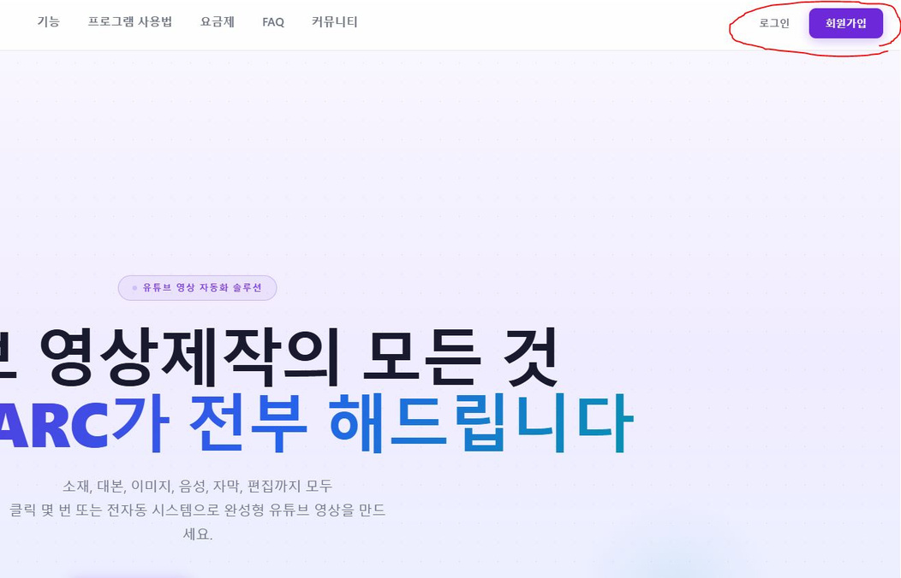
홈페이지에 접속하셨다면 오른쪽 상단의 회원 가입 버튼을 누르세요
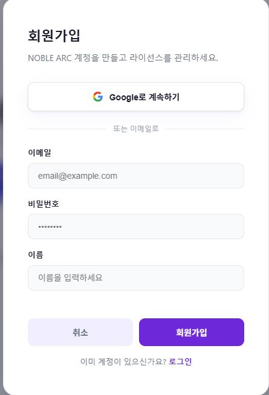
갖고 계신 구글 계정으로 회원 가입이 가능합니다. 또는 자신만의 이메일 계정으로 회원가입이 가능합니다. 이 경우에는 이메일주소를 입력하시고 비밀번호를 설정하세요. 그런다음 이름을 적으시고 회원가입버튼을 누르시면 됩니다. 저희 사이트에서는 이외에 개인정보를 요구하지 않습니다.
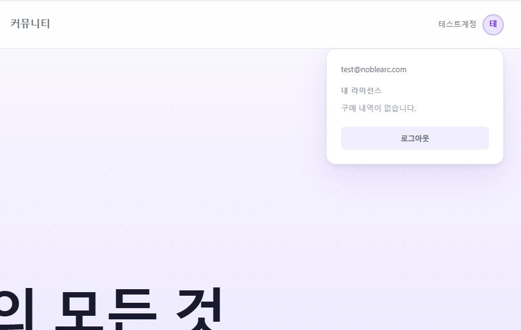
회원가입을 하시고 프로그램 결제를 하시면 자신의 라이선스 키가 오른쪽 상단의 동그라미를 클릭하시면 보이게 됩니다. 라이선스 키의 남은 유효기간도 같이 표시됩니다.
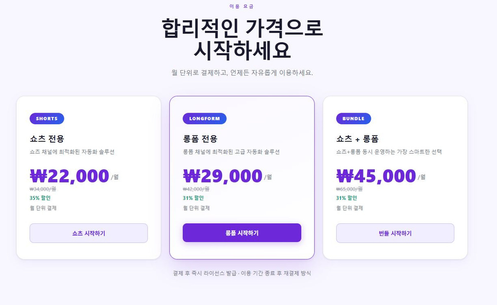
상단의 요금제 버튼을 클릭하시면 구매하실 수 있는 화면이 나옵니다. 여기서 구매를 하시면 됩니다. 1개월 단위로 결제가 가능하며 월 구독 형식의 정기결제 시스템은 곧 도입됩니다. 정기결제를 등록하실 경우 좀 더 저렴한 가격으로 이용이 가능합니다.
쇼츠 전용프로그램 따로 롱폼 전용프로그램 따로 결제가 가능하며 쇼츠와 롱폼 둘다 사용 가능한 번들 패키지 구매도 가능합니다.
결제를 완료하시면 이메일로 라이선스키와 프로그램 다운로드 링크, 사용설명서 링크가 같이 발송됩니다. 프로그램 링크를 클릭하셔서 다운로드 받으시면 됩니다.
3.프로그램 설치
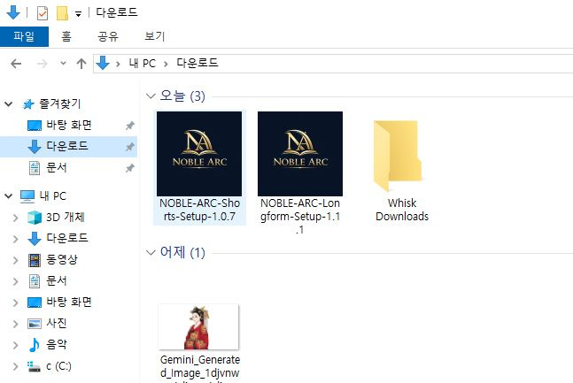
다운로드 받으신 프로그램을 더블클릭 합니다.
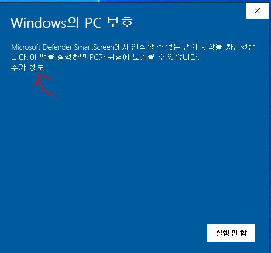
컴퓨터 환경에 따라 위와 같은 창이 뜰 수 있는데 안심하시고 상단의 추가정보를 클릭합니다
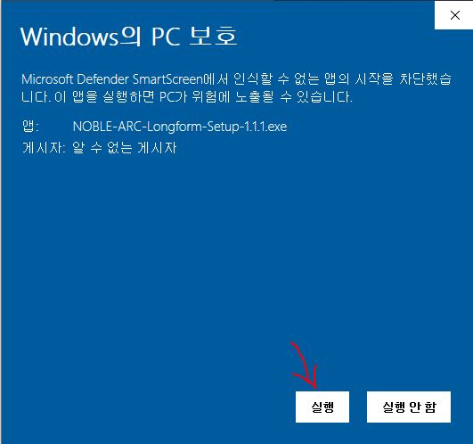
추가정보를 클릭하시면 위와 같은 화면이 나옵니다. 여기서 실행 버튼을 클릭합니다.
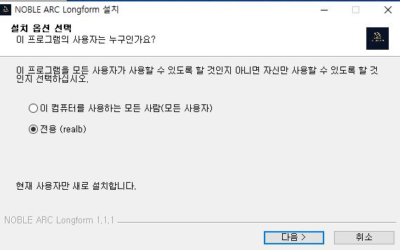
다음으로 사용자 선택을 하시면 됩니다. 개인적으로 갖고 계신 윈도우 프로필 사용자를 선택하시면 됩니다. 모든 사용자를 클릭하셔도 됩니다.
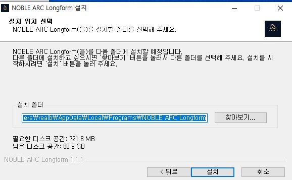
다음으로 설치 버튼을 눌러줍니다. 설치가 완료되면 바탕화면에 바로가기가 생성되며 시작화면에도 바로가기가 생성됩니다. 바로가기 버튼을 눌러 프로그램을 실행시켜 주시면 됩니다.
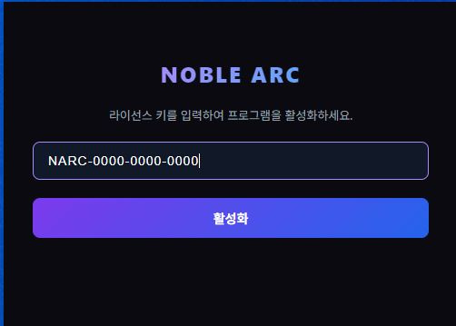
프로그램을 실행시키시면 위와 같은 화면이 나옵니다. 이메일로 발급받으신 라이선스 키를 입력해줍니다. 또는 홈페이지에서 라이선스키를 조회하셔서 입력하셔도 됩니다. 키를 입력하신 후 활성화 버튼을 눌러줍니다. 키의 경우 한번만 입력하시면 다음에 다시 입력하시지 않아도 알아서 활성화 되어 프로그램 창이 자동으로 뜨게 됩니다.
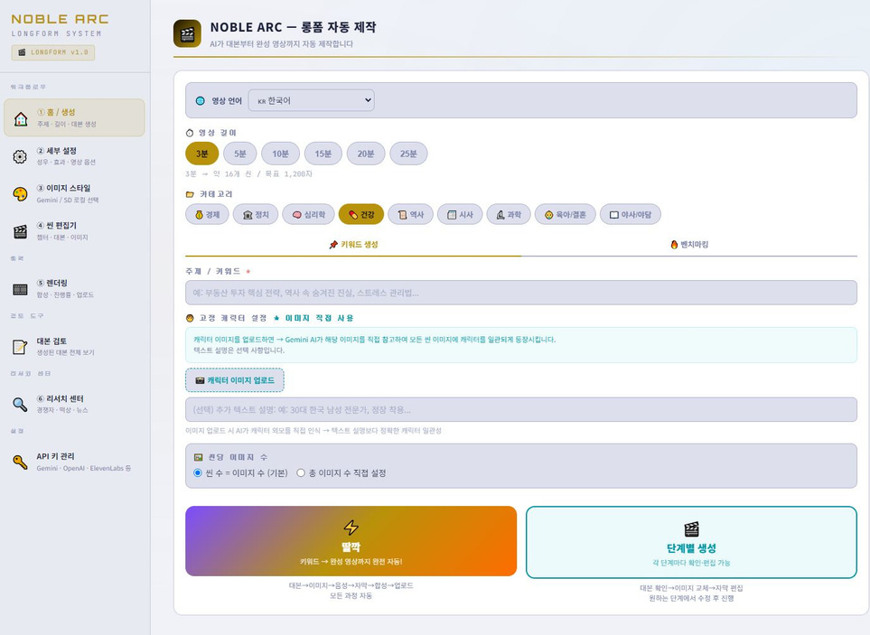
프로그램이 실행된 화면입니다. 이제 프로그램을 사용하실 1단계 준비가 끝났습니다.
다음으로 프로그램 사용법이 먼저 궁굼하시면 목차에서 5번과 6번을 선택하시고 프로그램 사용법을 아시기에 앞서 준비물인 API키 발급 받는 방법에 대해 궁금하시면 다음 4번 목차를 선택하시면 됩니다.
4.API키 관리 탭 설정
프로그램 설치를 마치셨다면 필수로 3가지를 설정 하시면 바로 유튜브 영상 제작이 가능합니다. 바로 3가지 api 발급받기입니다. 4-1 vertex json 발급 , 4-2 GROQ API키 발급 , 4-6 유튜브 API키 발급 이 3가지를 필수로 발급받아 프로그램내에 저장해서 보관하세요. 그러면 소재 발굴부터 대본, 이미지, 음성더빙, 자막, 랜더링까지 모두 다 할 수 있습니다.
4-1 vertex json 발급 및 등록 방법(필수)
저희 프로그램에서 가장 기본이 되는 설정 사항입니다. 프로그램 사용전 한번만 하시면 됩니다. 이후에는 자동 저장되어 계속 신경쓰지 않고 프로그램을 사용하실 수 있습니다. Vertex AI 서비스 계정 JSON 키를 반드시 발급 받으셔야 합니다. Vertex AI를 통해 대본, 이미지, TTS 등이 생성됩니다. Vertex AI를 이용하는 이유는 300달려(43만원 상당~44만원 상당)의 유료 크레딧을 무료로 지급하고 있기 때문입니다. 44만원 상당의 크레딧으로 엄청난 양의 대본과 이미지 TTS를 사용할 수 있어 비용 없이 영상을 만들 수 있습니다. 최저의 비용으로 최상의 동영상 자동 생성 프로그램을 목표로 하는 저희 프로그램에 딱 맞는 필수 키입니다. 거기에 300달러(44만원 상당)의 크레딧을 모두 다 사용한 경우 추가로 다른 계정을 만들어서 또 300달러 크레딧을 받아서 사용하시면 됩니다.
구글 300달러 크레딧을 추가로 발급받고자 하신다면, 명의를 달리하시고 전화번호와 카드번호를 다른 것으로 하여 새 구글 계정으로 발급받으시는 것을 권장드립니다. 아울러 IP 주소도 달리하시는 것을 권장드립니다.
추가로 구글의 300달러 크레딧 무료지급 정책은 구글의 정책 변화에 따라 바뀔수 있는 점은 미리 안내드립니다.
https://cloud.google.com 접속
먼저 위의 주소를 클릭하여 해당 구글 클라우드 사이트로 접속하여주세요. 구글 로그인도 같이 해주세요.
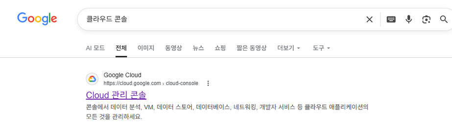
또는 구글 검색에 구글 클라우드 콘솔 이라고 검색하셔서 나오는 결과를 클릭하시고 들어가셔도 됩니다.
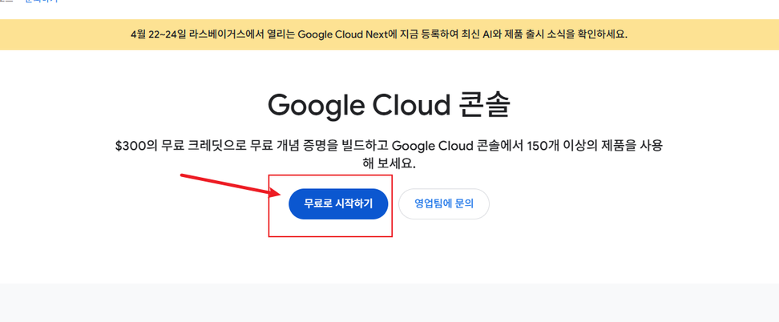
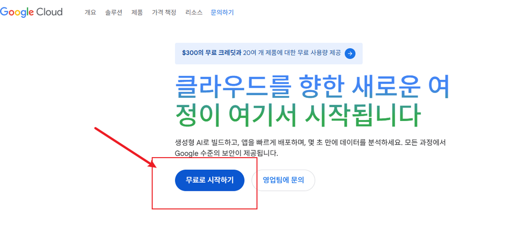
그럼 위와 같은 화면이 나옵니다. 여기서 무료로 시작하기 버튼을 클릭해주세요 화면이 위와 같이 다르게 나오는데 둘다 같습니다. 똑같이 무료로 시작하기 누르시면 되요.
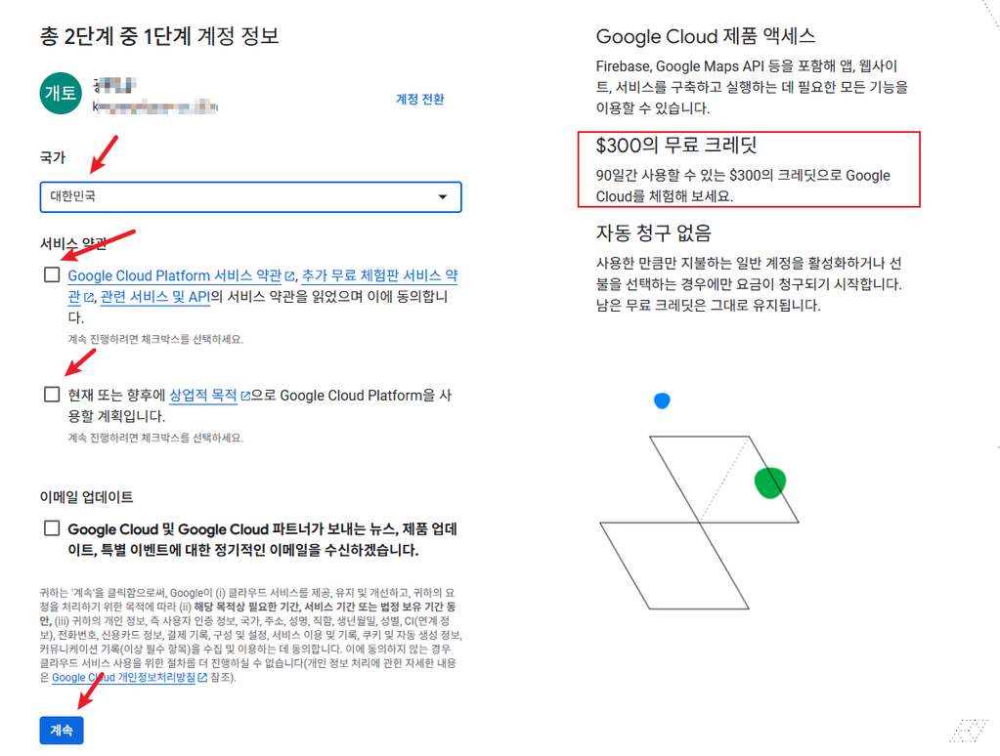
그럼 위와 같은 화면이 나오는데 오른쪽에 300달러의 무료크레딧이라고 써있는 계정만 300달러 무료체험을 신청해서 이용할 수 있습니다. 만약 저런 문구가 뜨지 않는다면 구글의 다른 유료 서비스를 이용하여서 300달러 크레딧 사용이 막힌 경우입니다. 저런 문구가 안뜨면 다른 계정으로 다시 시도해주셔야 합니다.
또한 이 사항을 진행하셔서 오른쪽에 자동 청구 없음이라는 안내문에서 보이듯이 크레딧을 다 사용하시더라도 추가로 요금이 다시 자동 청구 되는 일은 없습니다. 다만 크레딧을 모두 사용하고 나서도 계속 같은 계정을 사용하시면 사용한만큼 요금이 청구됩니다. 그러므로 300달러 크레딧을 모두 소진하셨다면 다른 계정을 만드셔서 추가로 300달러 크레딧을 받으시면 됩니다.
주의사항: 구글클라우드, 구글맵에서 유료 고객으로 등록하신 이력이 없으신 계정으로 하셔야 합니다.
국가를 대한민국으로 해주시고 서비스 약관 동의 체크 해줍니다. 그리고 하단에 계속 버튼을 클릭해주세요
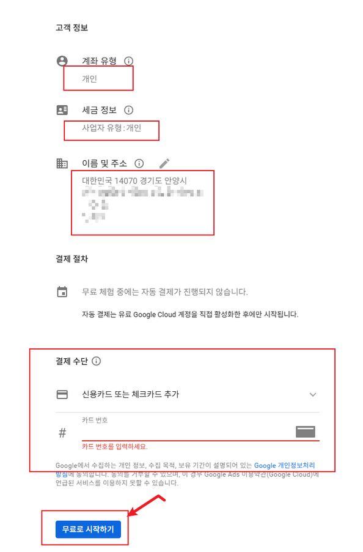
자 다음 화면입니다. 여기서 계좌유형은 개인으로 해주시고 주소는 자신의 주소를 입력해주세요. 우편번호까지 입력하셔야 합니다. 전화번호는 선택사항으로 적지 않으셔도 됩니다.
유효기간이 90일이기 때문에 90일 안에 크레딧을 모두 다 사용하시길 권장드립니다.
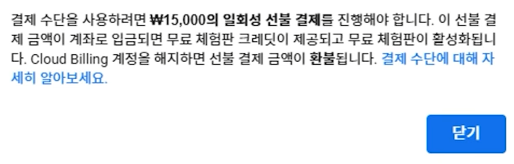
이용하는 사람마다 다르게 나타나는 안내창입니다. 어떤분은 아예 이런 창이 안뜨는 분도 있고 어떤분은 이렇게 15000원 일회성 선불결제를 해야한다고 나옵니다. 하지만 걱정하지 않으셔도 됩니다. 구글이 가져가는 금액이 아니고 90일이 지나면 반환되는 금액입니다.(또는 그 전에 해지시 바로 환급) 300달러 크레딧은 그 자체로 무료로 지급되는 사항입니다.
영상을 무료로 생성할 수 있는 크레딧을 지급 받았으니 이제 Vertex AI joson을 다운로드 받아야할 차례입니다. 지금부터 설명드리겠습니다.
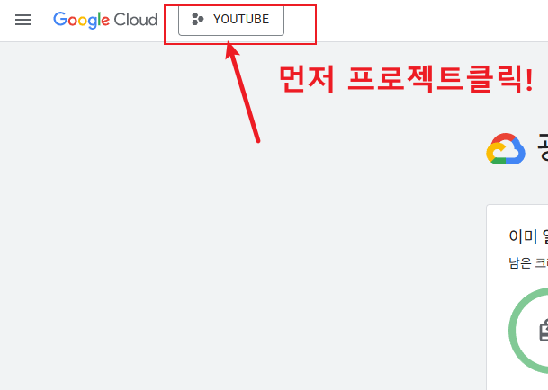
우선 상단에 현재 선택된 프로젝트 이름을 클릭합니다.
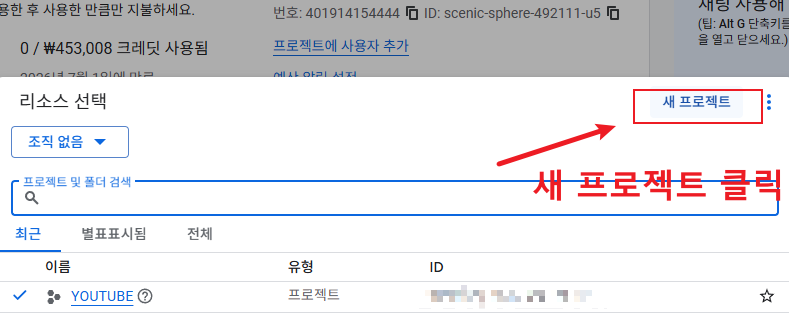
프로젝트 선택 창이 열리면 우측 상단의 "새 프로젝트" 버튼을 클릭합니다.
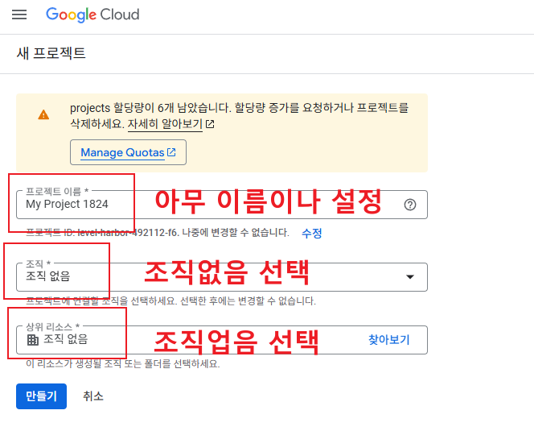
프로젝트 이름은 아무 이름이나 자유롭게 입력하시고, 조직은 "조직 없음"으로 설정한 후 "만들기"를 클릭합니다.
새 프로젝트를 발급 받으시고 나서 새로 만드신 프로젝트로 선택되어있는지 확인하세요. 만약 새로 만드신 프로젝트로 선택되어 있지 않으면 새로 만드신 프로젝트를 선택하신 후 아래 사항 진행해주세요.
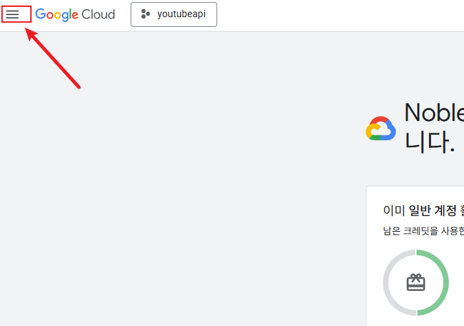
클라우드 처음 화면에서 왼쪽 최상단에 탐색 버튼을 클릭해주세요
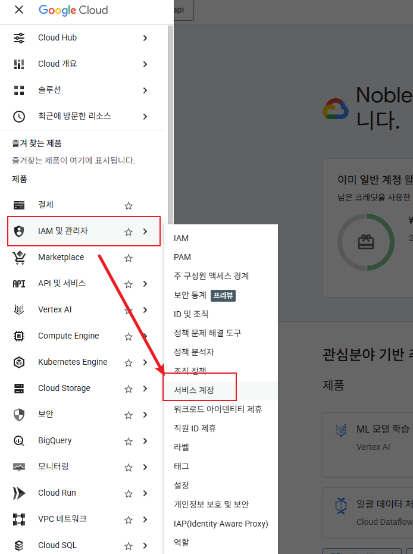
그러면 위와 같은 화면이 나오는데 여기서 IAM 및 관리자 탭을 클릭하시면 오른쪽에 창이 하나 뜹니다. 여기서 중간에 있는 서비스 계정을 클릭하여 줍니다.
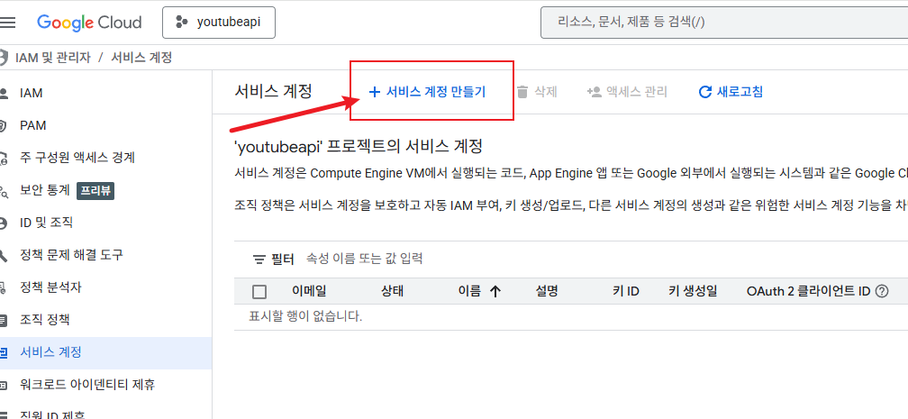
이제 상단에 있는 서비스 계정 만들기를 클릭해줍니다.
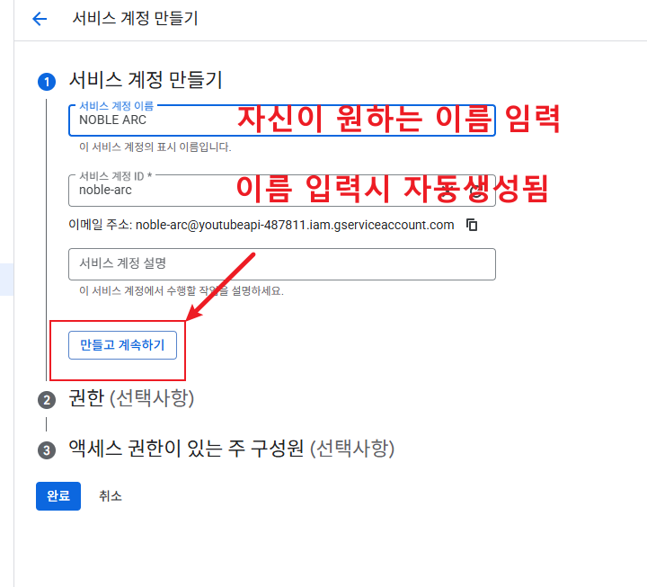
그럼 위와 같은 화면이 나오는데 서비스 계정 이름에 자신이 원하는 이름을 아무거나 입력해줍니다. 그럼 바로 밑에 서비스 계정 ID는 자동으로 발급 됩니다. 그 아래 만들고 계속하기 버튼을 클릭하시면 됩니다.
그럼 위와 같은 화면이 나오는데 여기서 역할 선택을 선택하신 후 검색창에 agent pla 라고 검색해주세요 그러면 Agent Platform 사용자라고 뜹니다. 이것을 선택하시고 밑에 있는 완료 버튼을 눌러주세요
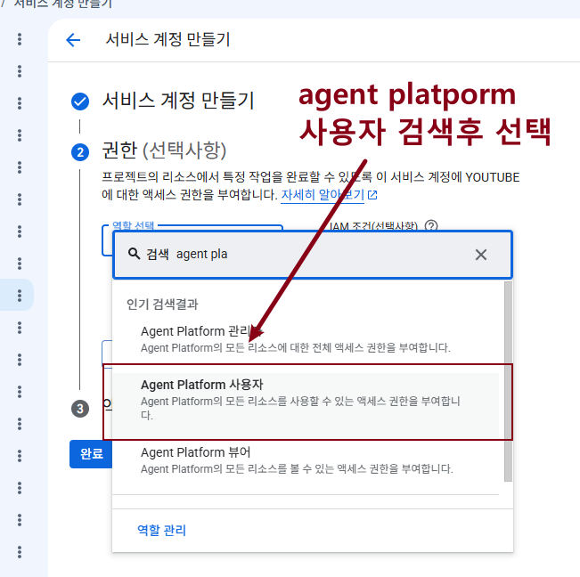
완료 버튼을 누르시면 위와 같은 화면이 뜹니다. 여기서 이메일이라고 적힌 곳 아래 이메일 주소를 클릭해주세요
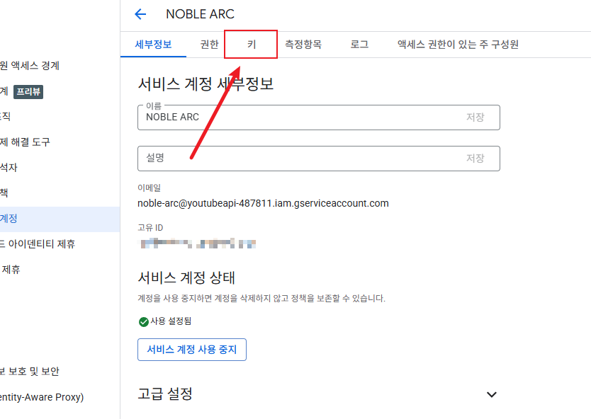
주소를 클릭하면 위와 같은 화면이 뜹니다. 여기서 키라는 탭을 바로 클릭해주세요
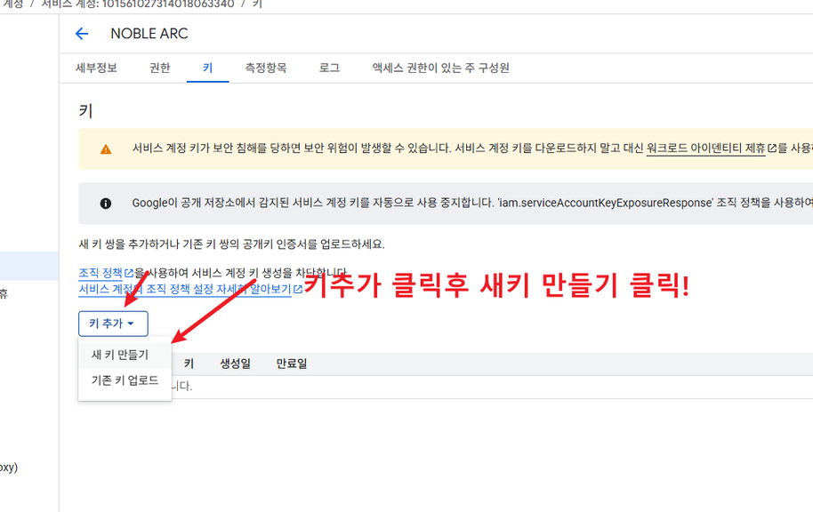
키 탭을 클릭하시면 위와 같은 화면이 뜨는데 여기서 키추가를 클릭하시면 하단에 새 키 만들기라고 뜹니다. 그것을 클릭해주세요
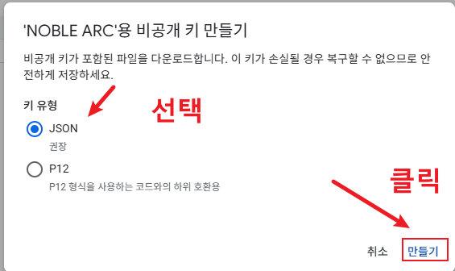
다음으로 뜨는 창에서 JSON이 선택되어 있을겁니다. 그대로 유지하신채 오른쪽 밑에 만들기 버튼을 클릭해주세요!!
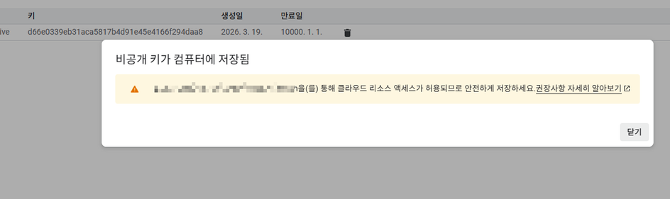
그럼 이렇게 비공개 키가 컴퓨터에 저장됨이라고 뜨게 됩니다. 확인하시고 닫기 버튼을 클릭해주세요
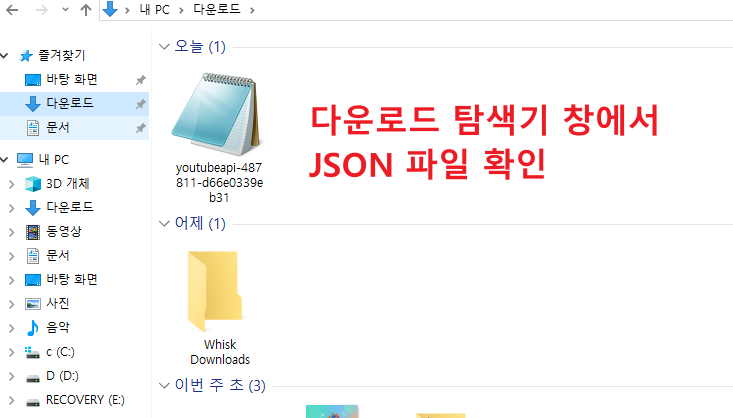
자 그럼 성공적으로 Vertex AI 서비스 계정 JSON 키 발급을 마쳤습니다.
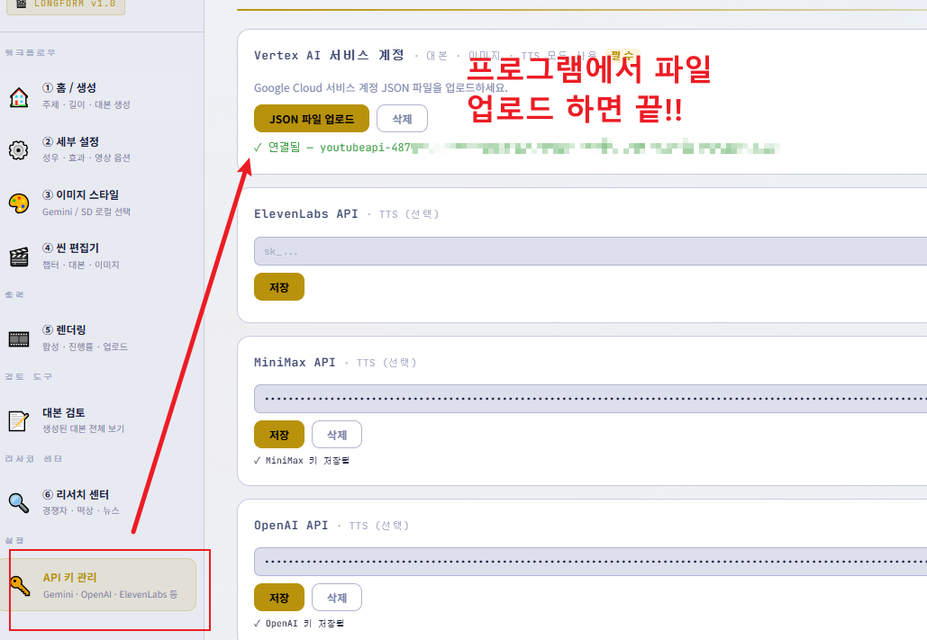
발급 받으신 JSON 파일을 프로그램 API키 관리 탭에 들어가셔서 맨위에 JSON업로드 버튼을 클릭하시면 프로그램에 자동 적용되고 저장 됩니다.
주의사항: JOSN파일은 단 한번만 다운로드가 가능합니다 그렇기 때문에 업로드 하셨더라도 따로 잘 보관해놓으시기 바랍니다.
다음으로
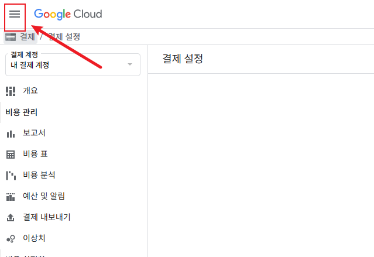
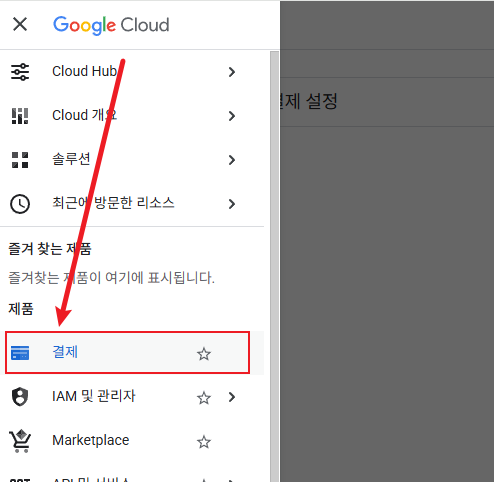
다음으로 해주실 사항은 왼쪽 맨위에 탐색 버튼을 클릭하신 후 결제 버튼을 클릭해주세요
그 다음 결제 화면으로 이동해주세요
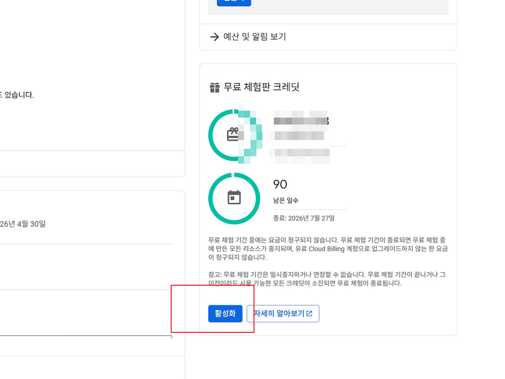
결제 화면으로 이동하면 위와 같은 화면이 오른쪽 하단에 또는 중앙에 보이실 겁니다. 여기서 파란색 활성화 버튼을 눌러주세요. 그런데 이 활성화 버튼이 어떤 분은 화면 최상단에 뜨는 경우도 있습니다. 구글이 UI를 다소 복잡하게 해놨기 때문에 뜨는 곳이 한두 군데 중복된 경우가 있더군요. 활성화 파란색 버튼이 뜬다면 바로 활성화 버튼을 눌러주세요.
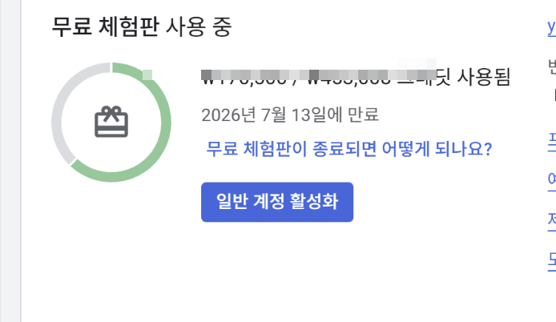
지금까지 진행하던 프로젝트를 다시 클릭해서 처음으로 돌아오셔서 위와 같이 일반계정 활성화 버튼이 보인다면 일반계정 활성화 버튼을 눌러주세요. 만약 위와 같은 일반계정 활성화 버튼이 나오지 않는다면 활성화 적용이 잘 된 것입니다.
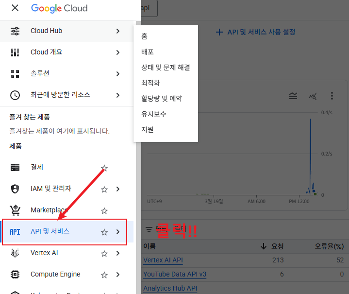
마지막으로 다시 왼쪽 최상단의 탐색창을 클릭하시고 API 및 서비스 버튼을 클릭해주세요
Vertex AI API 사용설정을 해야합니다.
Google Cloud Console의 상단 검색창을 활용하여 Vertex AI API를 찾아 활성화합니다.
① Google Cloud Console 화면 맨 위 검색창에 vertex 라고 입력하세요. 자동완성 목록이 나타납니다.
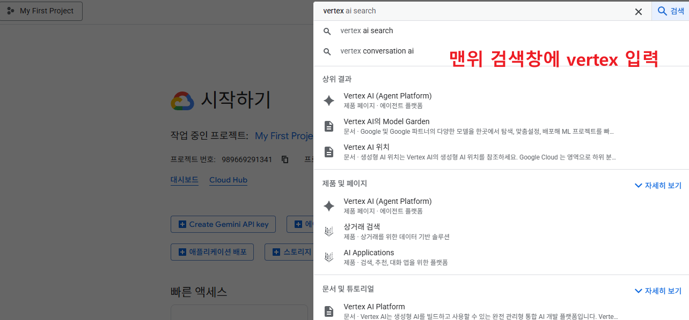
② 검색 버튼을 누른 후 검색 결과 목록에서 Vertex AI (Agent Platform) 항목을 클릭하세요. 목록 최상단에 표시됩니다.
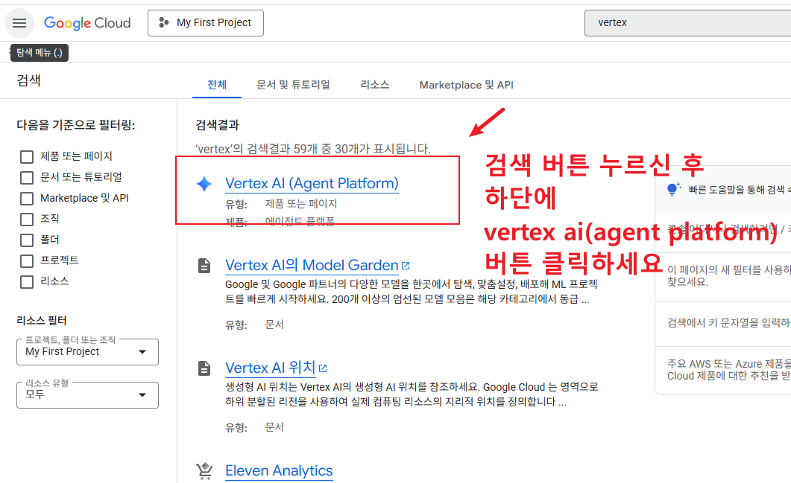
③ Vertex AI (Agent Platform) 페이지에 진입하면 Enable APIs 버튼이 보입니다. 해당 버튼을 클릭하세요. 이 버튼을 눌러야 Vertex AI API가 프로젝트에 활성화됩니다.
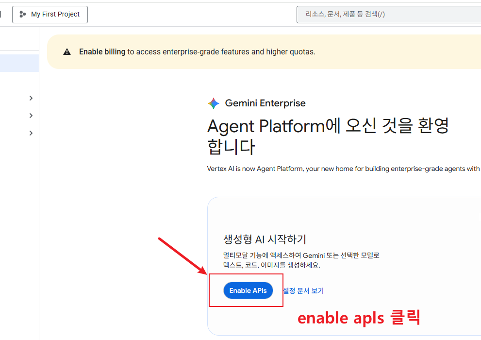
④ API 활성화가 완료되면 아래와 같이 인증 방법 선택 화면이 나타납니다. 여기서는 별도로 조작할 필요 없이 창을 닫으셔도 됩니다. Vertex AI API가 정상적으로 활성화된 것이므로, 이전 단계로 돌아가 서비스 계정 JSON 발급을 계속 진행하시면 됩니다.
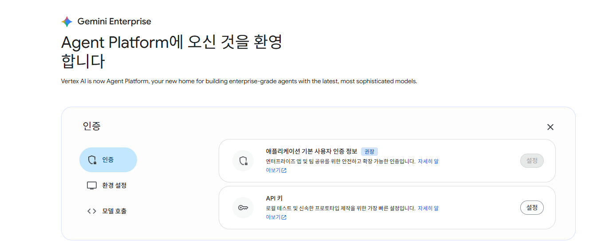
아래 사항은 해당되시는분들만 참고하세요
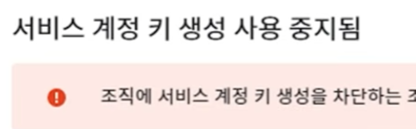
만약 이런 화면이 뜨는 분들이 계신다면 아래 설명대로 한번 해보세요
조직 정책 차단 시 해결 방법
가장 먼저 프로젝트 이름을 클릭하세요. 그리고 나서 새 프로젝트를 클릭합니다. 새로운 프로젝트로 다시 시도하는 방법입니다.
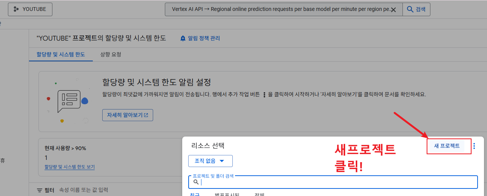
프로젝트 이름을 자유롭게 입력하고, 조직은 "조직 없음"으로 설정한 후 "만들기"를 클릭합니다.
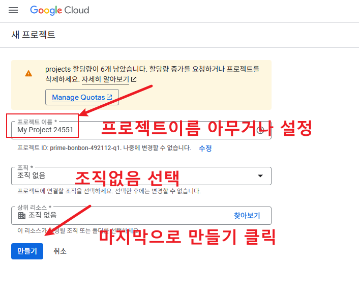
만들어진 새프로젝트 선택하신 후 다시 위에서 설명드렸던 vertex json 발급 받는 법을 다시 해주시면 됩니다. 결제설정 말고 vertex json 발급 받는 법 이 부분만 참고하세요.
4-1 추가정보. Vertex AI 이미지 생성 한도 상향 선택사항
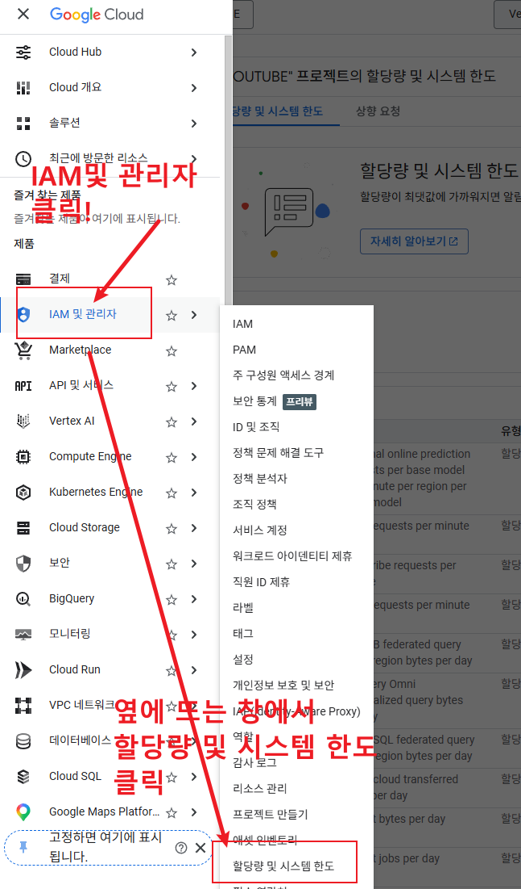
이 이미지 생성 한도 횟수를 증대 시킬수 있습니다. 이것을 해놓으시면 이미지 생성 속도가 빨라집니다. 무료로 신청이 가능합니다. 보통 수분내 자동 승인됩니다. 속도 상관없으시다면 건너 뛰셔도 됩니다.
① GCP 콘솔 좌측 메뉴에서 "IAM 및 관리자" 클릭 → 하위 메뉴에서 "할당량 및 시스템 한도" 클릭
할당량 및 시스템 한도 화면에서 필터 입력란에 아래 순서대로 입력하여 항목을 좁혀나갑니다.
필터 ① 서비스 : Agent Platform API
필터 ② Regional online prediction
필터 ③ region:us-central1
3가지 필터를 순서대로 입력하면 목록이 좁혀집니다. 필터링된 목록에서 측정기준(위치) 항목의 base_model 값이 정확히 imagen-3.0-generate 인 행을 찾아 선택해 주세요. 아래 스크린샷과 동일한 항목인지 반드시 확인하신 후 진행하세요.
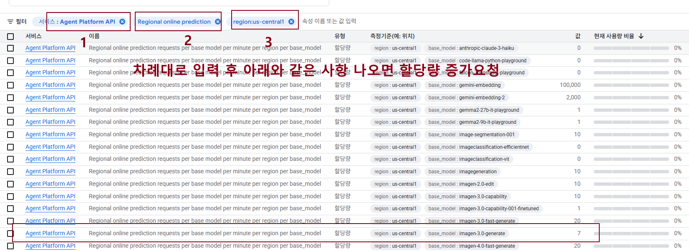
② 해당 항목 오른쪽 끝 점 3개(⋮) 클릭 → "할당량 수정" 선택
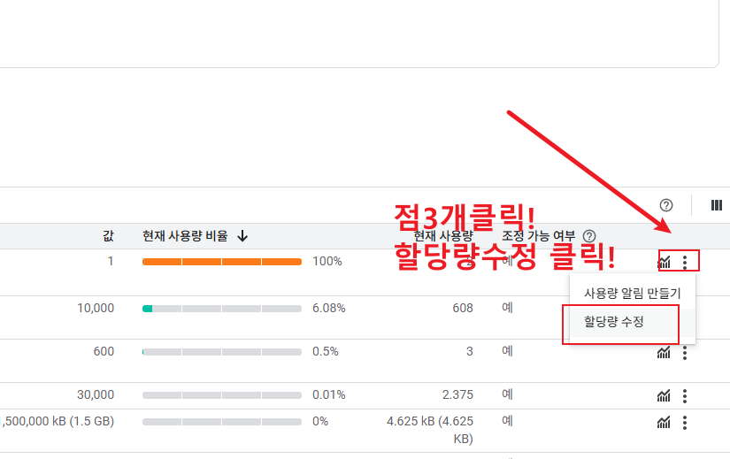
③ 새 값 입력(예: 7) 및 간단한 요청 설명 입력 후 "다음" 클릭
요청 설명 예시: 이미지 사용량이 많아 추가 요청 드립니다.
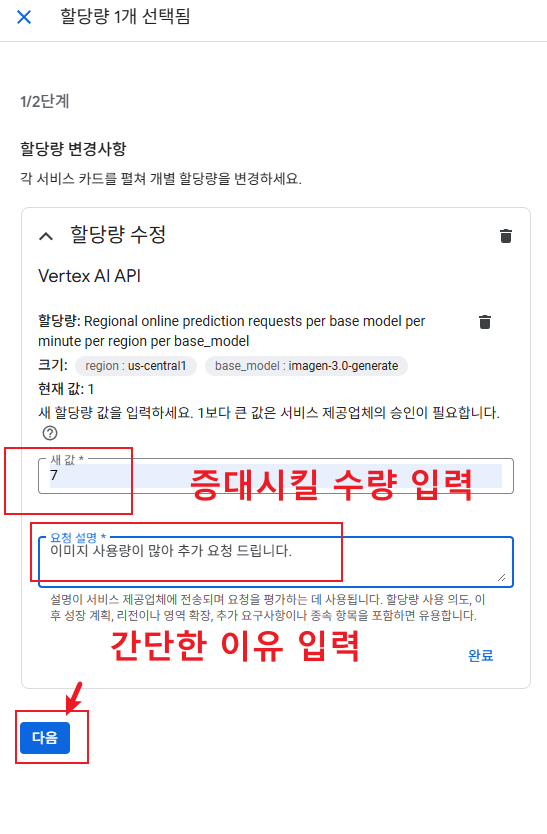
④ 연락처(전화번호) 입력 후 "요청 제출" 클릭 — 완료!
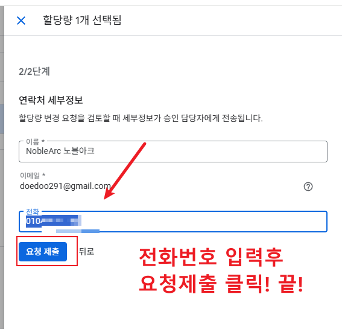
※ 승인 후 바로 적용되며 별도 재설정 없이 이미지 생성이 원활해집니다.
4-2 GROQ API키 발급받기(필수)
GROQ API는 자막을 잘 분할하고 씽크를 맞춰주는 서비스로 필수 API키입니다 가입과 API발급이 매우 간단하고 하루 120분 분량의 무료 사용량이 있어 마음놓고 이용하실 수 있습니다. 하지만 이 API키가 없더라도 프로그램 자체적으로 자막 분할과 씽크를 맞추는 프로그램이 내장되어 있어 120분을 모두 사용하신 경우라도 걱정없이 영상을 생성하실 수 있습니다. 그럼 지금부터 GROQ API키 발급 받는 방법을 알려드리겠습니다.
https://console.groq.com/home
이 주소를 주소창에 복사 붙여넣기 해서 접속해주세요
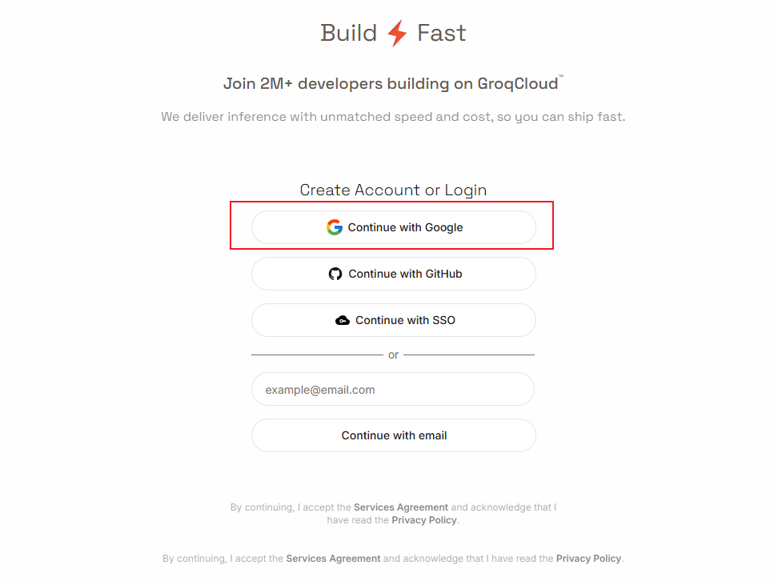
간단하게 구글 계정을 이용하여 회원 가입하실 수 있습니다. 가입하시면 바로 첫 홈 화면으로 자동으로 넘어가게 됩니다.
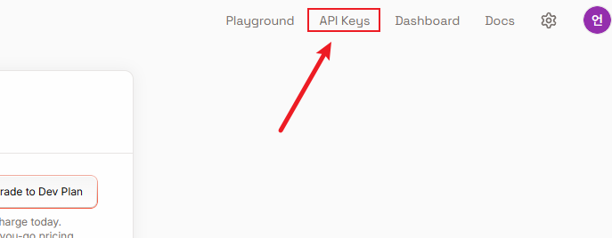
처음 화면 오른쪽 상단을 보시면 API KEYS 라는 버튼을 클릭하시면 됩니다.
여기서 CREATE API KEY 버튼을 클릭해줍니다.
DISPLAY NAME의 경우 아무거나 입력하셔도 됩니다.
바로 밑에 EXPIRATION 의 경우에는 CUSTOM을 선택하여 주시고 날짜를 내년 1월이나 2월의 아마 날짜나 선택하셔서 설정해주시면 됩니다. 기간 넉넉하게 무료 API를 사용하실 수 있습니다. 그런 후 SUBMIT 버튼을 클릭해주세요
키가 생성되었다면 즉시 COPY 버튼을 클릭하여 줍니다. 따로 메모장에 보관해놓으셔도 됩니다.
다시 프로그램으로 오셔서 API키 관리 탭을 클릭하시고 GROQ API키 키 입력란에 복사한 키를 붙여넣기 하시고 저장 버튼을 누르시면 됩니다. 역시 한번 저장을 클릭하시면 자동으로 계속 보관되어 다시 키를 저장하실 필요가 없습니다.
4-3 OPENAI API키 발급받기(선택)
이 API키 발급은 유료 선택사항입니다. 별도로 각 해당 사이트에서 별도 결제하셔서 이용하시는 사항입니다. 참고하시고 이용하시기 바랍니다.
OpenAI API 를 이용하는 경우는 OpenAI의 저렴한 음성 더빙시스템 TTS를 이용하기 위해서입니다. 대략 5달러(8000원대)의 요금으로 약 33만자의 TTS를 생성할 수 있어 가성비가 좋은 TTS 입니다. 다만 다른 TTS 서비스인 MINIMAX TTS 와 일레븐랩스 TTS 보다는 품질이 조금 떨어집니다. 다만 목소리를 어떻게 활용하느냐에 따라 충분히 활용한 TTS 입니다. 100만자의 경우에는 20분이상 영상을 100~120개 가까이 만들 수 있는 상당히 많은 분량의 음성지원입니다. 특히 영어의 경우 매우 자연스러운 고품질 TTS를 지원합니다.
API키 발급도 간단하기 때문에 잘 따라오시면 될 거 같습니다.
platform.openai.com 이 주소를 주소창에 복사 붙여넣기 하셔서 접속하여 줍니다.
여기서 구글로 계속하기 버튼을 클릭해줍니다.
다음 사항에 모두 동의합니다에 체크를 해줍니다. 그리고 아래 계정생성 끝내기를 누르시면 간단하게 가입이 완료됩니다.
입력란에 아무거나 입력하신 후 Create organization 버튼을 클릭해줍니다.
그 다음 이메일 주소를 적으신 후 continue 버튼을 클릭해주세요
그 다음 Generate API Key 버튼을 클릭해 줍니다.
그럼 그 다음에는 결제 화면이 뜨는데요 OPENAI API를 사용하기로 결정되셨다면 결제를 해주셔야 합니다.
우선 5달러부터 사용하시길 권장드립니다. 100만자의 충분한 TTS를 제공하기 때문입니다.
결제가 완료되셨다면 위와 같은 화면이 나옵니다. 여기서 API KEYS를 클릭해줍니다
오른쪽 상단의 Create new secret key 버튼을 클릭하세요
이름을 아무거나 설정하신 후 Create secret key 버튼을 클릭하시면 됩니다. 이제 api키가 생성이 됩니다.
API키는 한번만 보유줍니다. 그렇기 때문에 따로 보관해놓으시는 것을 추천드립니다. COPY 버튼을 클릭해서 복사해줍니다. 타인에게 노출되지 않도록 주의하세요.
마지막으로 NOBLE ARC 프로그램으로 돌아오셔서 API키 관리 탭에 OPENAI API 키 입력란에 붙여넣기 하시고 저장하기 버튼을 클릭하시면 됩니다. 역시 한번 저장하면 계속 보관되어 저장된 상태가 유지됩니다.
추가 안내사항
사용 한도 설정 (권장)
의도치 않은 과금을 방지하려면 한도 설정을 꼭 해두세요.
platform.openai.com/settings/limits 접속
Monthly budget (월 예산 한도) 설정
한도 도달 시 자동으로 API 차단됨
4-4 MINIMAX API키 발급받기(선택)
이 API키 발급은 유료 선택사항입니다. 별도로 각 해당 사이트에서 별도 결제하셔서 이용하시는 사항입니다. 참고하시고 이용하시기 바랍니다.
MINIMAX API는 TTS 서비스로서 4.5달러 요금제로 10만자의 음성을 생성하는 가성비가 좋은 서비스입니다. 일레븐랩스 대비해서 ¼ 가격으로 매우 저렴합니다. 거기에 요금제를 높여서 결제하실 경우 훨씬 효율 좋은 가성비로 이용하실 수 있습니다. 거기에 음성 품질이 일레븐랩스 못지 않고 다양한 언어를 자연스러운 더빙이 가능하도록 고품질의 TTS를 지원합니다. 그래서 저는 MINIMAX API , OPENAI API , 일레븐랩스 API 키 중에서 선택을 하신다면 MINIMAX API를 선택하시길 가장 권장드립니다. 저렴한 비용으로 가장 고품질의 TTS 서비스를 이용할 수 있기 때문입니다.
자 그렇다면 MINIMAX API키 발급 받는 방법을 자세히 안내드리겠습니다. 어렵지 않습니다.
platform.minimax.io
위 주소를 클릭하여 MINIMAX 사이트로 이동하시거나 주소창에 복사 붙여넣기하여 이동하시면 됩니다.
접속하시면 우측 상단에 SIGN UP 버튼이 있습니다. 해당 버튼을 클릭해주세요
여기서 continue with google 버튼을 클릭해주세요
구글로 가입하실 수 있습니다.
그럼 다음과 같은 화면이 뜨는데요 여기서 API KEYS 버튼을 클릭해줍니다.
[Create new secret key] 클릭
키 이름 입력 후 생성
발급된 키 즉시 복사 후 안전하게 보관
⚠️ OpenAI와 동일하게, 창을 닫으면 다시 볼 수 없습니다!
자 이제 NOBLE ARC 프로그램 들어오서셔 API키 관리 탭을 클릭하신 후 MINIMAX TTS API키 입력란에 복사한 키를 입력하시고 저장 버튼을 누르시면 됩니다. 역시 이번에도 저장을 누르면 다음에 또 저장하실 필요없이 보관된 상태로 꾸준히 이용하실 수 있습니다.
그리고 왼쪽 사이드바 하단에 Subscribe → AUDIO 를 클릭해주시고 CHANGE PLAN 버튼을 클릭하셔서 결제 창으로 넘어갑니다.
여기서 마음에 드는 요금제를 선택하셔서 결제하시면 됩니다. 저는 STARTER를 먼저 결제하셔서 충분히 경험을 해보신 후 나중에 높은 요금제를 선택하여 조금 더 높은 가성비효과를 누릴 수 있는 결제를 하시는 것을 추천드립니다.
4-5 일레븐랩스 API키 발급받기(선택)
이 API키 발급은 유료 선택사항입니다. 별도로 각 해당 사이트에서 별도 결제하셔서 이용하시는 사항입니다. 참고하시고 이용하시기 바랍니다.
일레븐랩스 API TTS 서비스는 가장 고품질의 자연스러운 음성 생성을 할 수 있는 음성 더빙 서비스입니다. 하지만 가격이 가장 비싸다는 단점이 있습니다. 그래도 영상에 가장 고품질의 음성을 사용하셔야 된다고 생각하신다면 이 설명서대로 진행하셔서 API키를 발급받으시면 됩니다. 무료사용량도 있기는한데 매우 적고 한국어 음성의 경우 무료로 잘 지원을 해주지 않습니다.
elevenlabs.io
이 주소를 인터넷 주소창에 복사해서 붙여넣기 해주세요
아니면 구글 검색-> 일레븐랩스 검색을 해서 접속하는 방법도 있습니다.
접속화면에서 SIGN UP 버튼을 클릭해주세요 구글 계정으로 간편 가입이 가능합니다. 또는 이메일 + 비밀번호로도 가입이 가능합니다.
접속하시면 왼쪽 사이드바 가장 아래쪽 최하단에 DEVELOPERS 라는 버튼을 찾아 클릭해주세요
다음으로 API KEYS라는 버튼이 보이실 겁니다 해당 버튼을 클릭해주세요
여기서 CREATE KEY 버튼을 클릭해줍니다.
여기서 이름을 아무거나 설정하신 후 하단에 CREATE KEY 버튼을 클릭하시면 됩니다
즉시 API키가 생성된 것을 보실 수 있습니다. COPY CLIPBOARD 버튼을 클릭하셔서 복사해놓으세요 일레븐랩스의 경우 API키를 분실하셔도 여기에 다시 오셔서 다시 복사하기가 가능합니다.
다시 NOBLE ARC 프로그램으로 오셔서 API키 관리 탭을 클릭하시고 일레븐랩스 API키 입력란에 복사한 API키를 붙여넣기 하신 후 저장 버튼을 누르시면 됩니다. 역시 한번 저장해놓으면 계속 보관되서 재입력하실 필요가 없습니다.
다시 일레븐랩스 홈페이지 하단에 UPGRADE 버튼을 누르시면 유료요금제 결제를 하실 수가 있습니다.
4-6 유튜브 API키 발급받기(필수)
유튜브 API의 경우 리서치센터를 이용하기 위해 필수로 다운로드 받으셔야 합니다. 유튜브 API의 경우 상당히 높은 무료 이용 한도를 가지고 있기 때문에 별다른 제한 없이 그냥 이용하실 수 있습니다. 즉 무료 사용이 가능하며 필수인 유튜브 API 입니다. 지금부터 발급 받는 방법을 안내해드리겠습니다.
console.cloud.google.com
위 주소를 클릭하여 구글 클라우드 콘솔 서비스로 이동하셔야 합니다. 해당 주소를 복사해서 인터넷 주소창에 붙여넣기 하셔도 됩니다.
접속하시고 로그인 하시면 상단에 프로젝트 선택이라고 있습니다. 해당 버튼을 클릭하여 줍니다.
여기서 새 프로젝트를 클릭하여 줍니다.
프로젝트 이름을 아무거나 작성 하신 후 바로 밑에 만들기 버튼을 클릭해줍니다. YOUTUBE라고 적으시길 추천드립니다. 잠시 후 생성된 프로젝트로 자동 전환됩니다 자동을 전환되지 않으면 아까 프로젝트 선택이라는 버튼 클릭하셨던 것을 다시 클릭하셔서 프로젝트 생성 된 것을 다시 클릭하시면 됩니다.
왼쪽 메뉴 [API 및 서비스] → [라이브러리] 클릭하여 줍니다.
그러고 나서 검색창에 "YouTube Data API v3" 입력하여 주세요 검색결과가 나오면 YouTube Data API v3를 클릭하여 줍니다.
화면이 전환되면 사용이라고 적힌 버튼을 클릭하여주세요
그럼 사용 활성화가 된 것을 보실 수 있습니다. 다음 단계로 넘어가겠습니다.
왼쪽 메뉴 [API 및 서비스] → [사용자 인증 정보] 클릭해주세요
다음 화면에서 사용자 인증정보 만들기를 클릭하시고 바로 밑에 뜨는 창에서 API키를 선택해주세요
그럼 이런 화면이 뜨는데 바로 만들기 버튼을 눌러주시면 됩니다.
자 이제 유튜브 API 키가 생성되었습니다. 복사버튼을 눌러 NOBLE ARC 프로그램에 입력 저장해놓으시면 됩니다. 그래도 따로 보관해놓으시길 권장드립니다.
유튜브 API키는 다른 API키와는 다르게 리서치센터에 저장공간이 따로 있습니다. 여기서 키를 관리하시면 됩니다. 리서치센터 전용 API키입니다.
4-8 Kling AI API 키 발급 받기(선택) 선택사항
이 API키 발급은 유료 선택사항입니다. 별도로 각 해당 사이트에서 별도 결제하셔서 이용하시는 사항입니다. 참고하시고 이용하시기 바랍니다.
Kling AI API 키는 NOBLE ARC 씬편집기에서 이미지를 즉석에서 영상으로 전환하는 기능을 사용하기 위해 필요합니다. 선택사항이며, 사용을 원하시는 분만 발급받으시면 됩니다.
먼저 개발자용 콘솔로 이동합니다:
👉 https://app.klingai.com/global/dev
여기서 로그인 또는 회원가입을 진행하세요. (Google / Apple / 이메일 가능)
Kling AI 개발자 플랫폼 메인 화면입니다. 우측 상단의 Sign In 버튼을 클릭하여 회원가입 또는 로그인을 진행합니다.
로그인 후 메인 화면으로 돌아오면 중앙에 Go to Console 버튼이 있습니다. 해당 버튼을 클릭합니다.
처음 접속하면 Kling AI Developer Console 환영 화면이 뜹니다. 하단의 Get Started 버튼을 클릭하여 시작합니다.
API Keys 관리 화면입니다. 우측 상단에 있는 + Create a new API Key 버튼을 클릭합니다.
키 생성 팝업이 뜨면 관리하기 편한 아무 이름이나 입력한 후 Confirm 버튼을 클릭합니다.
API 키가 생성되면 Access Key와 Secret Key가 표시됩니다. Copy All 버튼을 눌러 키를 복사한 후 반드시 따로 보관해 주세요. Secret Key는 이 화면에서만 확인 가능하며 이후에는 다시 볼 수 없습니다. 복사한 키를 NOBLE ARC 프로그램의 API 키 입력란에 붙여넣기 하시면 됩니다.
API 키를 발급받으셨다면 이제 요금제 결제가 필요합니다. 메인 화면에서 상단의 Pricing 버튼을 클릭합니다.
요금제 선택 화면입니다. 처음 이용하시는 분은 Trial Package $9.8 (100유닛) 가장 낮은 요금제를 추천드립니다. 원하시는 요금제를 선택하여 결제하시면 그때부터 바로 사용 가능합니다.
5.롱폼 전용프로그램 사용법
지금부터 NOBLE ARC 롱폼 유튜브 자동화 프로그램 사용법에 대해서 자세히 설명드리겠습니다.
저희 NOBLE ARC 롱폼 유튜브 자동화 프로그램은 상당히 직관적이고 단순한 인터페이스를 가지고 있어서 조금만 사용하셔도 금방 익숙해지실 수 있습니다. 그러면서도 많은 기능을 담고 있습니다. 타사 대비 더 많은 기능을 가지고 있는 프로그램입니다. 지금 부터 시작합니다.
VERTEX AI JSON을 활용하면 영상 제작의 모든 것을 비용 없이 만들 수 있습니다. 그 외에는 프로그램 사용자의 선택에 따라 추가 기능을 이용하여(API 비용이 발생하는) 영상제작도 가능합니다.
위의 화면은 설치하신 후 라이선스 인증까지 마치셨다면 나오는 첫 화면입니다.
첫 화면은 홈/생성 탭으로써 여기서 대본에 생성에 대한 것들을 결정하게 됩니다.
첫 화면에서 가장 위에 있는 것이 바로 언어 설정입니다. 저희 NOBLE ARC 유튜브 자동화 프로그램은 총 7개의 언어를 지원하며 계속해서 늘려나갈 계획입니다. 특히 한국어와 영어, 일본어는 유튜브 채널을 운영하는데 있어 중심 축을 할 언어입니다. 가장 기본적으로는 한국어가 선택되어 있습니다. 하지만 영어 유튜브 채널을 운영하고자 하시는분 또는 일본어로 유튜브 채널을 운영하고자 하시는분들은 해당 언어를 선택하시면 됩니다. 기타 다른 언어들도 마찬가지 입니다.
자동화시스템이 각 언어에 맞는 최적화된 대본을 생성합니다. 영어와 일본어 스페인어 등을 모르셔도 상관없이 고품질의 대본이 각 언어에 맞게 인공지능에 의해서 생성되며 이미지, 음성더빙까지 모두 각 언어로 운영 가능하도록 NOBLE ARC 유튜브 자동화 프로그램이 지원합니다.
특히 일본어의 경우 한국보다 조회수 1회당 광고 단가가 1.4배 정도로 높은편이고 겸업금지문화가 있어 유튜브를 운영하는 채널의 개수가 인구수 대비 현저히 적은편입니다. 그런데 성격은 한국인보다 조금 더 여유로워 한번 본 영상을 끝까지 보는 경향도 있습니다. 이것은 유튜브 알고리즘의 중요한 요소인 시청시간에 영향을 미치는 요소이기 때문에 알고리즘에 노출도를 높일 수 있는 유리한 환경입니다. 추가적으로 인구도 한국보다 2배이상 많고 유튜브 이용자도 많기 때문에 조금은 포화상태인 국내보다 일본이나 영어권 유튜브 채널 운영도 노려보시길 추천드려봅니다. 여러분의 더 많은 도전과 성공을 위해 다국어 시스템을 도입했습니다.
우선 테스트 과정을 보여드려야 하니 여기서는 한국어로 보여드리겠습니다.
언어설정 다음으로는 영상의 길이와 카테고리 설정이 있습니다. 어떤 길이와 카테고리를 선택하느냐에 따라 해당 부분에 맞는 최적화된 고품질 대본이 생성되기 때문에 선택은 매우 중요합니다. 롱폼 영상의 경우 보통 10~20분 길이로 하실 것을 추천드립니다.
각 영상 길이에 따라 씬 개수(이미지 개수)가 달라지며 카테고리 선택에 따라 대본의 구성이 달라집니다.
다음으로 키워드 생성과 벤치마킹 탭을 보실 수 있습니다. 키워드 생성이란 단순히 키워드나 주제만 입력하시면 알아서 프로그램이 거기에 맞는 대본을 생성해주는 시스템입니다. 좀더 구체화된 주제를 입력할 수록 본인이 의도하는 영상이 나올 수 있습니다. 예를들어 은, 금 이런식으로 하나의 단어로 입력하시기 보다는 은의 특성, 전세계 금의 역할과 같은 식으로 조금 더 구체화된 주제나 키워드를 넣으시길 권장드립니다.
그 옆에는 벤치마킹 탭이 있는데 해당 벤치마킹 탭은 리서치센터에서(리서치센터 사용법은 목차에서 확인 후 이동하시면 자세한 설명을 보실 수 있습니다.) 발굴한 벤치마킹 영상 대본을 입력하시거나 뉴스를 입력하시면 그것을 인공지능이 자동으로 재편집 및 재창조하여 새로운 고품질 대본을 생성하여 줍니다. 벤치마킹 대본의 장점은 살리면서도 고품질의 대본을 새롭게 만들어줍니다.
그래서 사용자의 의도에 따라 대본 생성 방식을 키워드 생성 또는 벤치마킹 대본 생성으로 선택하셔서 이용하시면 됩니다.
또한 직접입력 탭이 있습니다. 직접 작성한 대본이나 다른 곳에서 생성한 대본이 있다면 이곳에 붙여넣기 하여 AI 대본 생성 없이 바로 영상을 만들 수 있습니다.
직접입력 탭을 선택하시면 대본을 직접 붙여넣을 수 있는 텍스트 입력창이 나타납니다. 대본을 입력하시면 하단에 글자수, 예상 씬 수, 권장 영상 길이가 자동으로 계산되어 표시됩니다. 입력 완료 후 딸깍 또는 단계별 생성 버튼을 누르면 AI 대본 생성 단계는 건너뛰고 이미지 생성·음성 더빙·자막·렌더링 과정이 자동으로 진행됩니다.
Google 검색 기반 대본 생성
키워드 생성, 벤치마킹 탭, 직접입력 탭 설명 아래쪽에 Google 검색 기반 대본 생성 체크박스가 있습니다. 이 기능은 대본을 생성할 때 Google 검색을 실시간으로 참고하여 최신 정보와 사실을 대본에 반영해주는 신규 기능입니다.
체크박스를 활성화하면 대본 생성 시 AI가 Google 검색 결과를 추가로 참조하여 최신 이슈, 실제 수치, 최근 사건 등을 대본에 자연스럽게 녹여줍니다. 과거 학습 데이터는 그대로 유지되면서 최신성과 정확성이 함께 강화됩니다.
특히 시사, 경제, 정치, 뉴스, 트렌드처럼 최신 정보가 중요한 카테고리에서 효과가 큽니다. 반대로 야사/야담 카테고리는 최신성보다 역사적 사실이 중요하므로 해당 카테고리 선택 시 자동으로 비활성화됩니다.
단, Google 검색 과정이 추가되므로 대본 생성 시간이 다소 늘어날 수 있습니다. 최신 정보 반영이 필요하지 않은 주제라면 체크를 해제하고 사용하셔도 됩니다.
다음 아래에 보시면 고정 캐릭터 설정이라는게 있습니다. 이건 영상 각 씬마다 고정 캐릭터가 등장하게 하는 기능입니다. 원하는 캐릭터가 있다면 설명문구에 넣어주시면 됩니다. 특정 캐릭터를 설명하는 문구를 넣으면 그 문구에 맞는 캐릭터를 인공지능이 생성하여 각 씬 이미지 마다 등장을 시켜 줍니다. 만약 캐릭터가 필요없다고 하시면 공란으로 그냥 놔두셔도 상관없습니다.
보시는바와 같이 안경쓴 백호캐릭터라고 작성하자 안경쓴 백호캐릭터가 씬마다 등장하는 것을 보실 수 있습니다.
캐릭터 참조 이미지 업로드 (이미지 직접 사용)
텍스트로 캐릭터를 설명하는 방식 외에, 직접 보유하고 있는 캐릭터 이미지를 업로드하여 해당 캐릭터를 모든 씬에 반영시키는 방법도 있습니다. 홈/생성 탭에서 이미지 생성 모델 섹션 아래에 캐릭터 참조 이미지(선택) 항목이 있습니다.
이미지 선택 버튼을 눌러 원하는 캐릭터 이미지 파일을 업로드하면 해당 인물 이미지를 AI가 캐릭터 레퍼런스로 활용하여 모든 씬에 동일한 캐릭터가 등장하도록 이미지를 생성합니다. Imagen 3, Gemini 2.5 모델 모두 Vertex AI 300달러 무료 크레딧으로 이미지 생성됩니다. Imagen 3는 텍스트 방식으로 고정 캐릭터를 넣을 수 있으며, Gemini 2.5는 캐릭터 이미지 업로드 방식으로 고정 캐릭터를 넣을 수 있습니다.
업로드할 이미지는 16:9 롱폼 사이즈에 맞는 이미지를 사용하시는 것을 권장드립니다. 텍스트 설명 없이 이미지만 업로드해도 일관된 캐릭터가 유지됩니다.
위에서 선택 사항을 마쳤다면 가장 하단에는 딸깍 버튼과 단계별 생성 버튼이 있습니다.
딸깍 버튼은 키워드나 벤치마킹 대본을 입력하고 해당 딸깍 버튼을 누르면 대본 생성과 이미지 생성 그리고 음성더빙과 자막생성까지의 과정이 모두 한번에 자동화되어 이루어지며. 이 모든것을 하나로 합쳐 영상으로 만들어내는 과정까지!! 모든 전 과정을 자동화하는 기능입니다.
단계별 생성의 경우에는 대본이 생성되면 대본 확인을 하는 단계를 거치고 이미지가 생성되면 이미지 확인 과정을 거치고 중간에 이미지를 영상으로 전환을 하거나. 음성 선택을 하거나 등등 몇가지 필요한 사항을 선택하면서 단계별로 자동화 진행시키는 버튼입니다. 단계별 생성도 선택만 하면 대본과 이미지 음성더빙, 자막생성 등 모든 것이 자동화로 이루어지며 랜더링 시스템으로 영상화로 마지막 편집까지 자동으로 이루어집니다.
추가적으로 딸깍 버튼의 경우 현재 프로그램 내에 세부설정, 이미지스타일, 음성 선택 등 이미 선택되어 있는 것을 기준으로 영상을 전자동화하여 생성하기 때문에 딸깍 버튼으로 계속해서 영상을 같은 스타일로 만드실 분들은 미리 각 설정 사항들을 설정을 해놓으시고 딸깍 버튼으로 영상을 생성하시기 바랍니다. 각종 세부설정을 한번 지정해놓으면 그 다음부터는 주제 및 벤치마킹 대본을 넣고 딸깍 버튼을 누르시는 것만으로도 연속해서 계속 한번의 버튼 클릭으로 영상 생성이 자동화 됩니다.
다음은 대본검토 탭입니다. 단계별 생성으로 대본을 생성하면 여기서 대본 검토를 하실 수 있습니다. 각 씬별로 대본이 분리되어 보이며 위의 전체 복사를 통해 대본을 복사하실수도 있습니다.
대본 검토가 끝났다면 대본 재생성 버튼을 누르시거나(대본이 마음에 안드신경우) 다음 단계인 세부설정으로 이동하기 버튼을 누르시면 됩니다. 대본 재생성 버튼을 누르실경우 처음 홈/생성 탭으로 이동하여 단계별 생성 버튼을 한번 더 누르실 수 있습니다. 단계별 생성 버튼을 한번 더 누르시면 대본이 재생성 되며 다시 대본 검토 탭으로 이동하여 다시 검토하실 수 있습니다.
다음으로 세부설정 탭입니다. 여기서 선택하신 사항은 딸깍 버튼에도 모두 적용됩니다. 가장 처음에는 성우를 선택하는 겁니다. 저희 NOBLE ARC 유튜브 자동화 프로그램은 총 4가지의 TTS 음성더빙 시스템을 지원합니다. 가장 기본은 Gemini TTS 입니다. 발급받으신 무료 구글 크레딧에서 크레딧이 소모되면서 음성더빙이 생성 되기 때문에 무료입니다. 품질도 상당히 고품질입니다. 각 음성별로 미리듣기가 지원되고 있어 미리 들어보시고 음성을 선택하시면 됩니다. 무료이면서 고품질이지만 다른 TTS 대비 생성 속도가 조금 느립니다.
하지만 자동화 프로그램 특성상 자동화하고 다른일을 하시면서 영상을 만드실 수 있기 때문에 무료로 Gemini TTS로 생성하시는 것을 권장드립니다. 좀 더 고품질의 TTS 음성 더빙을 원하실경우 MINIMAX TTS 도는 일레븐랩스 TTS를 이용하시면 됩니다.
다음으로 MINIMAX TTS 입니다. 5달러 요금제로 10만자의 음성더빙을 지원하면서 품질은 매우 고품질입니다. 가성비로 좋은 TTS 입니다. 특히 다국어(일본어, 스페인어, 독일어 등등)를 하실때 사용하시면 매우 좋은 TTS 입니다. API키를 발급받아야 사용하실 수 있는데 따로 API키 발급 받는 방법을 설명드렸으니 참고 해주세요 하단에 음성 속도 및 피치 조절이 가능한데 기본으로 설정된대로 하시는 것을 권장드립니다.
다음으로 MINIMAX TTS 밑에 OPENAI TTS가 있습니다. 유료 요금제를 결제해야 사용할 수 있는 TTS 입니다. 5달러로 약 33만자의 음성을 생성할 수 있어 가성비가 좋습니다. 속도도 빠릅니다. 하지만 음성 품질이 영어를 제외하면 조금은 떨어집니다. 역시 음성 미리듣기가 가능합니다
마지막으로 일레븐랩스 TTS를 선택하실 수 있습니다. 한국어 음성 역시 뛰어난 음질로 지원합니다. 가장 고품질입니다. 하지만 가격이 가장 비쌉니다. MINIMAX TTS 보다 3~4배정도 더 비싼 가격입니다. 처음에는 무료로 지원해드리는 TTS를 이용하시거나 고품질의 가성비 TTS인 MINIMAX TTS를 이용하시고 나중에 수익화가 많이 이루어지시면 일레븐랩스로 업그레이드 하시는 것도 좋은 방법입니다.
다음으로 효과 설정 탭입니다. 여러가지를 설정하실 수 있습니다. 가장 먼저 왼쪽 상단에 보시면 씬과 씬 사이에 화면 전환 효과를 설정하실 수 있는데 최근 유튜브 흐름은 화면 전환 효과를 넣지 않는 편이라서 없음을 기본으로 설정해놨습니다.
씬전환효과 오른쪽에는 카메라 이동 설정이 있는데 꼭 1가지는 설정하실 것을 추천드립니다. 잘 모르실경우 랜덤 효과를 집어넣으셔도 좋습니다. 카메라 이동 설정을 하시면 정지된 화면에 움직임 효과를 주어 좀더 시청자들의 몰입도를 높일 수 있고. 휴먼터치 감을 주어 유튜브로부터 사람이 직접 만들었다는 것으로 인식을 시켜줄 수 있습니다.
아래는 효과 강도 조절이 있고 씬 간 쉼 (무음 패딩)이 있습니다. 효과 강도 조절은 카메라 이동 효과의 강도 설정입니다. 기본으로 그대로 사용하셔도 됩니다. 씬 간 쉼 (무음 패딩)은 씬과 씬 사이에 무음을 주어 좀더 부드러운 화면 전환이 이루어지도록 합니다. 하지만 아예 0으로 설정하셔도 무방합니다. 0.3~0.5를 주시는 것도 좋습니다.
그리고 하단에는 BGM 업로드 버튼이 있습니다. 유튜브 라이브러리에서 다운로드 받으신 음악을 여기에 업로드 하시면 배경음악으로 깔립니다. 볼류 조절 기능도 있는데 10%~15%를 권장드립니다. 그리고 최신 버전 기준으로 BGM 설정 버튼 옆에 유튜브 오디오 라이브러리, Pixabay Music, Free Music Archive 같은 무료 BGM 사이트 링크 버튼도 같이 포함되어 있으니 다양한 배경 음악을 찾으셔서 좋은 음악을 설정해보세요.
다음으로 영상 설정 탭입니다. 여기서는 건들 것이 없습니다. 자막표시는 기본이라 그대로 놔두시면 되고 유튜브 자동 업로드 설정이 있습니다. 유튜브 자동 업로드 설정 방법은 목차 8번에서 자세히 설명드리겠습니다 따로 확인해주세요. 단 여기서 한가지 설명을 드리면 유튜브 자동 업로드를 체크 설정하시면 메타데이터에 탭에서 메타데이터 생성을 하지 않으셔도 알아서 제목, 설명문구, 태그 3가지와 유튜브 썸네일까지 모두 자동 생성되서 알아서 업로드가 됩니다. 이것을 체크하셨을 경우에는 메타데이터에서 별도로 메타데이터를 생성하지 마세요.
다음으로 메타데이터 탭입니다. 롱폼 전용 프로그램에만 있는 기능입니다. 위의 AI 자동생성 버튼을 클릭하시면 화면에서 보시는바와 같이 대본에 맞는 제목과 설명문구가 작성됩니다. 하단에는 태그도 자동 생성 됩니다. 해당 부분을 유튜브 업로드하실 때 복사 붙여넣기 해서 사용하시면 됩니다.
그리고 그 밑에는 AI 썸네일 자동생성이 있습니다. 대본에 맞는 썸네일 이미지를 자동 생성해줍니다. 제목이 썸네일에 문구로 자동으로 들어간 확실한 썸네일 이미지가 생성됩니다. 썸네일 생성은 Vertex AI(Imagen3) + Canvas 조합으로 처리되며, 별도 Gemini API 키 없이 서비스 계정만으로 사용 가능합니다. 유튜브 자동 업로드 토글을 켠 경우 영상 설정 탭에서 썸네일 자동 생성 포함 토글을 켜두시면 업로드 시 자동으로 썸네일도 함께 업로드됩니다.
메타데이터까지 완성이 되었다면 다음으로 이미지 스타일 버튼을 선택해줍니다.
롱폼 전용 프로그램에서 지원하는 이미지 스타일은 총 16가지가 있습니다. 여기서 이미지 스타일을 선택하셔서 이용하시면 됩니다. 요즘 유행하는 스틱맨, 2D 애니메이션을 비롯하여 웹툰스타일과 썰 전용으로 많이 쓰이는 치비캐릭터 이미지 스타일 등등 많이 있습니다.
이미지 스타일이 선택되셨다면 하단에 있는 이미지 생성 버튼을 클릭해줍니다. 그럼 그 밑에 이미지 생성 과정이 보입니다. 지금까지 몇개의 이미지가 만들어졌는지 표시가 됩니다. 이미지가 다 만들어지면 바로 자동으로 씬 편집기 화면으로 넘어가게 됩니다.
다음으로 씬편집기 화면입니다. 이미지 생성을 마쳤다면 이곳으로 오게됩니다. 맨 위에는 자막 스타일설정이 있고 그 밑에는 각 씬별로 대본과 이미지가 배치되어 있습니다. 먼저 자막 설정에 대해서 설명드리겠습니다.
다양한 자막폰트가 준비되어 있습니다. 마음에 드는 폰트를 미리보기 화면을 통해 확인하신 후 폰트를 선택하시면 됩니다.
옆에 업로드 버튼이 있는데 해당 업로드 버튼을 클릭하셔서 타 사이트에서(구글 폰트 등) 다운로드 받으신 폰트를 업로드하여 폰트를 늘리실 수 있습니다. 적용도 가능합니다.
⚠️ 다국어 폰트 안내
BM으로 시작하는 폰트(예: BMJUA, BMDOHYEON 등)는 배달의민족 전용 폰트로 한글과 영문만 지원하며, 일본어·중국어·아랍어 등 다국어를 지원하지 않습니다.
다국어 영상 제작이 필요하신 분은 기본 폰트(NotoSansKR 등)를 사용하시거나, 씬 편집기의 폰트 업로드 버튼을 클릭하여 원하는 언어를 지원하는 폰트를 직접 업로드하여 사용하시기 바랍니다.
해외 언어 폰트는 눈누 또는 Google Fonts에서 무료로 다운로드하실 수 있습니다.
자막 글씨 크기조절이 가능하고 색상 선택과 위치도 선택이 가능합니다. 그리고 배경박스를 선택하여 자막에 배경 색상을 줘서 몰입감을 더 할 수 있습니다.
자막 편집 하단에는 아까 말씀드렸다시피 각씬별로 이미지 배치와 대본을 확인하실 수 있고 사용된 이미지 프롬프트도 확인하실 수 있습니다. 그리고 각 씬마다 이미지 재생성 버튼이 있으므로 마음에 안드는 이미지는 재생성 버튼을 클릭하셔서 이미지를 바꾸실 수 있습니다. 또는 옆에 이미지/영상 버튼이 있는데 해당 버튼은 갖고 계신 이미지나 동영상을 올려서 자신만의 이미지나 동영상으로 씬 화면을 전환시키는 기능입니다.
생성된 이미지는 이미지 폴더 열기를 열면 생성된 이미지들이 모여있는 위치로 이동하게 됩니다. 거기있는 이미지를 영상만들기 사이트에서 영상으로 전환하신 후(FLOW,그록,RUNWAY 등) 이곳에 업로드해서 영상으로 변환하실 수 있습니다. 보다 더 자세한 사항은 목차10번에서 좀더 자세히 설명을 드리도록 하겠습니다.
또한 씬 추가 씬삭제 버튼을 클릭하셔서 씬을 추가하거나 삭제하실 수 있습니다. 씬추가의 경우 가장 마지막 씬으로 배치됩니다. 또한 ▲ ▼ 버튼을 이용해서 씬 위치를 변경하실 수 있습니다.(최신버전 기준)
자막과 씬 화면이 최정 확인되셨다면 하단에 음성 더빙 생성 버튼을 클릭합니다. 그러면 자동으로 음성 더빙이 시작됩니다.
음성 더빙 생성이 끝났다면 하단에 랜더링으로 이동 버튼을 클릭해줍니다.
마지막으로 랜더링 시작 버튼을 클릭해주면 자동으로 그동안 확인했던 모든 사항이 여기서 최종 편집되어 완성된 영상 결과물을 보여주게 됩니다. 완성된 결과물은 다운로드 하셔서 직접 업로드 하시거나 업로드 설정으로 자동 업로드 되게 하실 수 있습니다. 유튜브 자동 업로드 설정 방법은 목차8번에서 확인하시기 바랍니다.
마지막으로 만들어진 영상 결과가 나오면 바로 해당 창에서 재생해서 확인해볼 수 있으며 다운로드도 가능합니다. 다운로드 받으신 후 업로드 하시면 됩니다. 아래 초기화 버튼의 경우 영상 생성 전 과정을 초기화하여 새로운 영상을 또 만들수 있게 전부 초기화하여 줍니다.
SNS 콘텐츠 변환 — 영상 대본으로 SNS 글 자동 발행
영상 완성 후 렌더링 탭에는 SNS 콘텐츠 변환 기능이 추가되어 있습니다. 완성된 영상의 대본을 바탕으로 각 SNS에 최적화된 글을 자동으로 생성하여 바로 활용하실 수 있습니다.
발행하고자 하는 SNS 채널을 선택하신 후 SNS 콘텐츠 생성 버튼을 누르면 해당 SNS에 맞는 형식으로 글이 자동 생성됩니다. 롱폼 프로그램에서는 블로그, 스레드, 인스타그램, 페이스북 총 4가지 SNS를 지원합니다.
생성된 글은 해시태그와 함께 출력되며 영상 이미지도 함께 표시됩니다. 전체 복사 버튼으로 내용을 바로 복사하여 각 SNS에 붙여넣기 하시면 됩니다. 유튜브 영상 업로드와 SNS 홍보를 동시에 진행할 수 있어 채널 운영 효율이 크게 높아집니다.
여기까지 NOBLE ARC 유튜브 자동화 롱폼 전용 프로그램에 대한 사용법 설명을 마치겠습니다.
6.쇼츠 전용프로그램 사용법
지금부터 NOBLE ARC 쇼츠 유튜브 자동화 프로그램 사용법에 대해서 자세히 설명드리겠습니다
저희 NOBLE ARC 쇼츠 유튜브 자동화 프로그램은 상당히 직관적이고 단순한 인터페이스를 가지고 있어서 조금만 사용하셔도 금방 익숙해지실 수 있습니다. 그러면서도 많은 기능을 담고 있습니다. 타사 대비 더 많은 기능을 가지고 있는 프로그램입니다. 지금 부터 시작합니다.
VERTEX AI JSON을 활용하면 영상 제작의 모든 것을 비용 없이 만들 수 있습니다. 그 외에는 프로그램 사용자의 선택에 따라 추가 기능을 이용하여(API 비용이 발생하는) 영상제작도 가능합니다.
위의 화면은 설치하신 후 라이선스 인증까지 마치셨다면 나오는 첫 화면입니다.
첫 화면은 홈/생성 탭으로써 여기서 대본에 생성에 대한 것들을 결정하게 됩니다.
첫 화면에서 가장 위에 있는 것이 바로 언어 설정입니다. 저희 NOBLE ARC 유튜브 자동화 프로그램은 총 7개 의 언어를 지원하며 계속해서 늘려나갈 계획입니다. 특하 한국어와 영어, 일본어는 유튜브 채널을 운영하는데 있어 중심 축을 할 언어입니다. 가장 기본적으로는 한국어가 선택되어 있습니다. 하지만 영어 유튜브 채널을 운 영하고자 하시는분 또는 일본어로 유튜브 채널을 운영하고자 하시는분들은 해당 언어를 선택하시면 됩니다. 기타 다른 언어들도 마찬가지 입니다.
자동화시스템이 각 언어에 맞는 최적화된 대본을 생성합니다. 영어와 일본어 스페인어 등을 모르셔도 상관없 이 고품질의 대본이 각 언어에 맞게 인공지능에 의해서 생성되며 이미지, 음성더빙까지 모두 각 언어로 운영 가 능하도록 NOBLE ARC 유튜브 자동화 프로그램이 지원합니다.
특히 일본어의 경우 한국보다 조회수 1회당 광고 단가가 1.4배 정도로 높은편이고 겸업금지문화가 있어 유튜 브를 운영하는 채널의 개수가 인구수 대비 현저히 적은편입니다. 그런데 성격은 한국인보다 조금 더 여유로워 한번 본 영상을 끝까지 보는 경향도 있습니다. 이것은 유튜브 알고리즘의 중요한 요소인 시청시간에 영향을 미 치는 요소이기 때문에 알고리즘에 노출도를 높일 수 있는 유리한 환경입니다. 추가적으로 인구도 한국보다 2배 이상 많고 유튜브 이용자도 많기 때문에 조금은 포화상태인 국내보다 일본이나 영어권 유튜브 채널 운영도 노 려보시길 추천드려봅니다. 여러분의 더 많은 도전과 성공을 위해 다국어 시스템을 도입했습니다. 우선 테스트 과정을 보여드려야 하니 여기서는 한국어로 보여드리겠습니다.
쇼츠 전용 자동화 프로그램은 5가지의 탭을 지원합니다. 키워드생성, 벤치마크대본, 원본가공, 썰/야담, 직접입력
모두 쇼츠 대본 구성에 맞는 최적화된 고품질 대본을 만들어줍니다.
딸깍 버튼은 키워드나 벤치마킹 대본을 입력하고 해당 딸깍 버튼을 누르면 대본 생성과 이미지 생성 그리고 음 성더빙과 자막생성까지의 과정이 모두 한번에 자동화되어 이루어지며. 이 모든것을 하나로 합쳐 영상으로 만 들어내는 과정까지!! 모든 전 과정을 자동화하는 기능입니다.
단계별 생성의 경우에는 대본이 생성되면 대본 확인을 하는 단계를 거치고 이미지가 생성되면 이미지 확인 과 정을 거치고 중간에 이미지를 영상으로 전환을 하거나. 음성 선택을 하거나 등등 몇가지 필요한 사항을 선택하 면서 단계별로 자동화 진행시키는 버튼입니다. 단계별 생성도 선택만 하면 대본과 이미지 음성더빙, 자막생성 등 모든 것이 자동화로 이루어지며 랜더링 시스템으로 영상화로 마지막 편집까지 자동으로 이루어집니다.
추가적으로 딸깍 버튼의 경우 현재 프로그램 내에 세부설정, 이미지스타일, 음성 선택 등 이미 선택되어 있는 것을 기준으로 영상을 전자동화하여 생성하기 때문에 딸깍 버튼으로 계속해서 영상을 같은 스타일로 만드실 분들은 미리 각 설정 사항들을 설정을 해놓으시고 딸깍 버튼으로 영상을 생성하시기 바랍니다. 각종 세부설정 을 한번 지정해놓으면 그 다음부터는 주제 및 벤치마킹 대본을 넣고 딸깍 버튼을 누르시는 것만으로도 연속해 서 계속 한번의 버튼 클릭으로 영상 생성이 자동화 됩니다.
키워드 생성이란 단순히 키워드나 주제만 입력하시 면 알아서 프로그램이 거기에 맞는 대본을 생성해주는 시스템입니다. 좀더 구체화된 주제를 입력할 수록 본인 이 의도하는 영상이 나올 수 있습니다. 예를들어 은, 금 이런식으로 하나의 단어로 입력하시기 보다는 은의 특 성, 전세계 금의 역할과 같은 식으로 조금 더 구체화된 주제나 키워드를 넣으시길 권장드립니다. 카테고리에서 주제나 키워드에 맞는 카테고리를 선택해주시고 오른쪽에 있는 분위기도 선택해주시면 됩니다.
벤치마킹 탭이 있는데 해당 벤치마킹 탭은 리서치센터에서(리서치센터 사용법은 목차에서 확인 후 이동하시면 자세한 설명을 보실 수 있습니다.) 발굴한 벤치마킹 영상 대본을 입력하여 대본을 생성하는 곳입니다. 인공지능이 자동으로 재편집 및 재창조하여 새로운 고품질 대본을 생성하여 줍니다. 벤치마킹 대본의 장점은 살리면서도 고품질의 대본을 새롭게 만들어줍니다.
원본가공의 경우에는 블로그 글, 나무위키 글, 뉴스 글 등을 복사 붙여넣기 하시면 인공지능이 자동으로 재편집 및 재창조하여 쇼츠에 맞는 새로운 고품질 대본을 생성하여 줍니다.
썰/야담의 경우에는 인터넷에 떠도는 썰이나 야담을 넣으시거나 인공지능에게 썰을 만들어달라고 해서 복사 붙여넣기 하시면 쇼츠에 맞는 최적화된 대본이 만들어지게 됩니다. 또는 썰 주제나 키워드를 입력하시면 알아서 대본이 생성됩니다.
썰유형과 말투를 설정하실 수 있습니다.
딸깍 버튼과 단계별 생성 버튼을 클릭하면 위의 화면과 같이 길이 선택이 있습니다 45초~60초 길이 선택을 추천드립니다. 길이를 선택하시면 대본이 생성되게 됩니다.
마지막으로 직접입력 탭입니다. 직접 작성한 대본이나 다른 곳에서 생성한 대본이 있다면 이곳에 붙여넣기 하여 AI 대본 생성 없이 바로 쇼츠 영상을 만들 수 있습니다.
직접입력 탭을 선택하시면 대본을 직접 붙여넣을 수 있는 텍스트 입력창이 나타납니다. 사용법 안내처럼 작성한 대본을 붙여넣으면 문장 단위로 씬이 자동 분리되어 영상으로 만들어집니다. 마침표(.), 물음표(?), 느낌표(!) 기준으로 씬이 분리되며 선택한 영상 길이(씬 수)를 참고해 1~2문장씩 묶어줍니다. 대본 입력 후 하단에 글자수, 예상 씬 수, 권장 영상 길이가 자동 계산되어 표시됩니다. 딸깍 또는 단계별 생성 버튼을 누르면 AI 대본 생성 단계는 건너뛰고 이미지 생성·음성 더빙·자막·렌더링 과정이 자동으로 진행됩니다.
Google 검색 기반 대본 생성
키워드 생성, 벤치마크 대본, 원본가공, 썰/야담 탭 사용 시 하단에 Google 검색 기반 대본 생성 체크박스가 표시됩니다. 이 기능은 대본 생성 과정에서 Google 검색을 실시간으로 참조하여 최신 정보와 사실을 대본에 반영해주는 신규 기능입니다.
체크하시면 대본 생성 시 AI가 Google 검색 결과를 추가로 참조하여 최신 이슈, 수치, 사건 등을 반영한 대본을 만들어줍니다. 과거 학습 데이터는 그대로 유지하면서 최신성과 정확성이 동시에 강화됩니다.
최신 정보가 중요한 주제(시사, 뉴스, 트렌드 등)에서 특히 효과적입니다. 단, 검색 과정이 추가되어 생성 시간이 다소 늘어날 수 있습니다. 최신 정보가 필요하지 않은 주제라면 체크를 해제하고 사용하셔도 됩니다.
다음은 대본검토 탭입니다. 단계별 생성으로 대본을 생성하면 여기서 대본 검토를 하실 수 있습니다. 각 씬별로 대본이 분리되어 보이며 위의 전체 복사를 통해 대본을 복사하실수도 있습니다.
대본 검토가 끝났다면 대본 재생성 버튼을 누르시거나(대본이 마음에 안드신경우) 다음 단계인 세부설정으로 이동하기 버튼을 누르시면 됩니다. 대본 재생성 버튼을 누르실경우 처음 홈/생성 탭으로 이동하여 단계별 생성 버튼을 한번 더 누르실 수 있습니다. 단계별 생성 버튼을 한번 더 누르시면 대본이 재생성 되며 다시 대본 검토 탭으로 이동하여 다시 검토하실 수 있습니다
다음으로 세부설정 탭입니다. 여기서 선택하신 사항은 딸깍 버튼에도 모두 적용됩니다. 가장 처음에는 성우를 선택하는 겁니다. 저희 NOBLE ARC 유튜브 자동화 프로그램은 총 4가지의 TTS 음성더빙 시스템을 지원합니 다. 가장 기본은 Gemini TTS 입니다. 발급받으신 무료 구글 크레딧에서 크레딧이 소모되면서 음성더빙이 생 성 되기 때문에 무료입니다. 품질도 상당히 고품질입니다. 각 음성별로 미리듣기가 지원되고 있어 미리 들어보 시고 음성을 선택하시면 됩니다. 무료이면서 고품질이지만 다른 TTS 대비 생성 속도가 조금 느립니다.
하지만 자동화 프로그램 특성상 자동화하고 다른일을 하시면서 영상을 만드실 수 있기 때문에 무료로 Gemini TTS로 생성하시는 것을 권장드립니다. 좀 더 고품질의 TTS 음성 더빙을 원하실경우 MINIMAX TTS 도는 일레븐랩스 TTS를 이용하시면 됩니다.
다음으로 MINIMAX TTS 입니다. 5달러 요금제로 10만자의 음성더빙을 지원하면서 품질은 매우 고품질입니 다. 가성비로 좋은 TTS 입니다. 특히 다국어(일본어, 스페인어, 독일어 등등)를 하실때 사용하시면 매우 좋은 TTS 입니다. API키를 발급받아야 사용하실 수 있는데 따로 API키 발급 받는 방법을 설명드렸으니 참고 해주세 요 하단에 음성 속도 및 피티 조절이 가능한데 기본으로 설정된대로 하시는 것을 권장드립니다
다음으로 MINIMAX TTS 옆에 OPENAI TTS가 있습니다. 유료 요금제를 결제해야 사용할 수 있는 TTS 입니 다. 5달러로 약 33만자의 음성을 생성할 수 있어 가성비가 좋습니다. 속도도 빠릅니다. 하지만 음 성 품질이 영어를 제외하면 조금은 떨어집니다. 역시 음성 미리듣기가 가능합니다
마지막으로 일레븐랩스 TTS를 선택하실 수 있습니다. 한국어 음성 역시 뛰어난 음질로 지원합니다. 가장 고품 질입니다. 하지만 가격이 가장 비쌉니다. MINIMAX TTS 보다 3~4배정도 더 비싼 가격입니다. 하지만 쇼츠의 경우 음성 더빙량이 많지 않아 고품질의 일레븐랩스를 사용하셔도 비용적으로 큰 부담은 되지 않습니다. 처음에는 무료 로 지원해드리는 TTS를 이용하시거나 고품질의 가성비 TTS인 MINIMAX TTS를 이용하시고 나중에 수익화가 많이 이루어지시면 일레븐랩스로 업그레이드 하시는 것도 좋은 방법입니다.
다음으로 효과 설정 탭입니다. 여러가지를 설정하실 수 있습니다. 중앙에 보시면 씬과 씬 사이 에 화면 전환 효과를 설정하실 수 있는데 최근 유튜브 흐름은 화면 전환 효과를 넣지 않는 편이라서 없음을 기본으로 설정해놨습니다. 화면전환 효과를 주시려면 옆에 페이드를 선택하시면 됩니다.
씬전환효과 위에는 카메라 이동 설정이 있는데 꼭 1가지는 설정하실 것을 추천드립니다. 카메라 이동 설정을 하시면 정지된 화면에 움직임 효과를 주어 좀더 시청자 들의 몰입도를 높일 수 있고. 휴먼터치 감을 주어 유튜브로부터 사람이 직접 만들었다는 것으로 인식을 시켜줄 수 있습니다.
효과 강도 조절은 카메리 이동 효과의 강도 설 정입니다. 기본으로 그대로 사용하셔도 됩니다.
그리고 하단에는 BGM 업로드 버튼이 있습니다. 유튜브 라이브러리에서 다운로드 받으신 음악을 여기에 업로 드 하시면 배경음악으로 깔립니다. 볼류 조절 기능도 있는데 10%~15%를 권장드립니다. 그리고 최신 버전 기 준으로 BGM 설정 버튼 옆에 유튜브 오디오 라이브러리, Pixabay Music, Free Music Archive 같은 무료 BGM 사이트 링크 버튼도 같이 포함되어 있으니 다양한 배경 음악을 찾으셔서 좋은 음악을 설정해보세요
영상 탭에서는 영상에 관련된 설정들을 하실 수 있습니다. 여기서는 특별히 자동 업로드를 원하실 경우 해당 사항을 원하시는대로 설정하시고(유튜브 자동 업로드는 목차 8번을 설명서를 확인하세요) 다른 설정사항은 건들지 않으시는 것을 추천드립니다. 유튜브 자동 업로드를 체크 설정하시면 제목, 설명문구, 태그 3가지가 자동 생성되어 업로드가 이루어집니다.
세부설정 마지막 탭에는 고정 캐릭터 설정이라는게 있습니다. 이건 영상 각 씬마다 고정 캐릭터가 등장하게 하는 기능입니다. 원하는 캐릭터가 있다면 설명문구에 넣어주시면 됩니다. 특정 캐릭터를 설명하는 문구를 넣으면 그 문구에 맞는 캐릭터를 인공지능이 생성하여 각 씬 이미지 마다 등장을 시켜 줍니다. 만약 캐릭터가 필요없다고 하시면 공란으로 그냥 놔두셔도 상관없습니다.
캐릭터 참조 이미지 업로드 (이미지 직접 사용)
텍스트로 캐릭터를 설명하는 방식 외에, 직접 보유하고 있는 캐릭터 이미지를 업로드하여 해당 캐릭터를 모든 씬에 반영시킬 수 있습니다. 세부설정의 캐릭터 탭에서 이미지 생성 모델 아래 캐릭터 참조 이미지(선택) 항목을 찾으실 수 있습니다.
이미지 선택 버튼을 눌러 원하는 캐릭터 이미지 파일을 업로드하면 AI가 해당 인물 이미지를 캐릭터 레퍼런스로 활용하여 모든 씬에 동일한 캐릭터가 등장하도록 이미지를 생성합니다. Imagen 3, Gemini 2.5 모델 모두 Vertex AI 300달러 무료 크레딧으로 이미지 생성됩니다. Imagen 3는 텍스트 방식으로 고정 캐릭터를 넣을 수 있으며, Gemini 2.5는 캐릭터 이미지 업로드 방식으로 고정 캐릭터를 넣을 수 있습니다.
업로드할 이미지는 9:16 쇼츠 사이즈에 맞는 이미지를 사용하시는 것을 권장드립니다. 텍스트 설명 없이 이미지만 업로드해도 일관된 캐릭터가 유지됩니다.
세부설정이 끝나셨다면 이미지스타일 이동 버튼을 클릭해줍니다. 영상탭에 이미지 스타일로 이동버튼이 있습니다. 또는 왼쪽 탭에서 이미지 스타일 탭을 클릭하시면 됩니다.
쇼츠 전용 프로그램에서 지원하는 이미지 스타일은 총 14가지가 있습니다. 여기서 이미지 스타일을 선택하셔 서 이용하시면 됩니다. 요즘 유행하는 스틱맨, 2D 애니메이션을 비롯하여 웹툰스타일과 썰 전용으로 많이 쓰 이는 치비캐릭터 이미지 스타일 등등 많이 있습니다.
이미지 스타일이 선택되셨다면 하단에 있는 이미지 생성 버튼을 클릭해줍니다. 그럼 그 밑에 이미지 생성 과정 이 보입니다. 지금까지 몇개의 이미지가 만들어졌는지 표시가 됩니다. 이미지가 다 만들어지면 바로 자동으로 씬 편집기 화면으로 넘어가게 됩니다.
다음으로 씬편집기 화면입니다. 이미지 생성을 마쳤다면 이곳으로 오게됩니다. 맨 위에는 자막 스타일설정이 있고 그 밑에는 각 씬별로 대본과 이미지가 배치되어 있습니다. 먼저 자막 설정에 대해서 설명드리겠습니다.
다양한 자막폰트가 준비되어 있습니다. 마음에 드는 폰트를 미리보기 화면을 통해 확인하신 후 폰트를 선택하 시면 됩니다.
옆에 업로드 버튼이 있는데 해당 업로드 버튼을 클릭하셔서 타 사이트에서(구글 폰트 등) 다운로드 받으신 폰 트를 업로드하여 폰트를 늘리실 수 있습니다. 적용도 가능합니다.
⚠️ 다국어 폰트 안내
BM으로 시작하는 폰트(예: BMJUA, BMDOHYEON 등)는 배달의민족 전용 폰트로 한글과 영문만 지원하며, 일본어·중국어·아랍어 등 다국어를 지원하지 않습니다.
다국어 영상 제작이 필요하신 분은 기본 폰트(NotoSansKR 등)를 사용하시거나, 씬 편집기의 폰트 업로드 버튼을 클릭하여 원하는 언어를 지원하는 폰트를 직접 업로드하여 사용하시기 바랍니다.
해외 언어 폰트는 눈누 또는 Google Fonts에서 무료로 다운로드하실 수 있습니다.
자막 글씨 크기조절이 가능하고 색상 선택과 위치도 선택이 가능합니다. 그리고 배경박스를 선택하여 자막에 배경 색상을 줘서 몰입감을 더 할 수 있습니다
자막 편집 하단에는 아까 말씀드렸다시피 각씬별로 이미지 배치와 대본을 확인하실 수 있고 사 각 씬마다 이미지 재생성 버튼이 있으므로 마음에 안드는 이미지는 재 생성 버튼을 클릭하셔서 이미지를 바꾸실 수 있습니다. 또는 옆에 이미지/영상 버튼이 있는데 해당 버튼은 갖 고 계신 이미지나 동영상을 올려서 자신만의 이미지나 동영상으로 씬 화면을 전환시키는 기능입니다.
생성된 이미지는 이미지 폴더 열기를 열면 생성된 이미지들이 모여있는 위치로 이동하게 됩니다. 거기있는 이 미지를 영상만들기 사이트에서 영상으로 전환하신 후(FLOW,그록,RUNWAY 등) 이곳에 업로드해서 영상으로 변환하실 수 있습니다. 보다 더 자세한 사항은 목차10번에서 좀더 자세히 설명을 드리도록 하겠습니다.
또한 씬 추가 씬삭제 버튼을 클릭하셔서 씬을 추가하거나 삭제하실 수 있습니다. 씬추가의 경우 가장 마지막 씬으로 배치됩니다. 또한 ▲ ▼ 버튼을 이용해서 씬 위치를 변경하실 수 있습니다.(최신버전 기준)
자막과 씬 화면이 최종 확인되셨다면 하단에 음성 더빙 생성 버튼을 클릭합니다. 그러면 자동으로 음성 더빙이 시작됩니다.
다음으로 랜더링 버튼을 눌러주세요
마지막으로 랜더링 시작 버튼을 클릭해주면 자동으로 그동안 확인했던 모든 사항이 여기서 최종 편집되어 완 성된 영상 결과물을 보여주게 됩니다. 완성된 결과물은 다운로드 하셔서 직접 업로드 하시거나 업로드 설정으 로 자동 업로드 되게 하실 수 있습니다. 유튜브 자동 업로드 설정 방법은 목차8번에서 확인하시기 바랍니다.
마지막으로 만들어진 영상 결과가 나오면 바로 해당 창에서 재생해서 확인해볼 수 있으며 다운로드도 가능합 니다. 다운로드 받으신 후 업로드 하시면 됩니다. 아래 초기화 버튼의 경우 영상 생성 전 과정을 초기화하여 새 로운 영상을 또 만들수 있게 전부 초기화하여 줍니다.
SNS 콘텐츠 변환 — 영상 대본으로 SNS 글 자동 발행
영상 완성 후 렌더링 탭에는 SNS 콘텐츠 변환 기능이 추가되어 있습니다. 완성된 영상의 대본을 바탕으로 각 SNS에 최적화된 글을 자동으로 생성하여 바로 활용하실 수 있습니다.
발행하고자 하는 SNS 채널을 선택하신 후 SNS 콘텐츠 생성 버튼을 누르면 해당 SNS에 맞는 형식으로 글이 자동 생성됩니다. 쇼츠 프로그램에서는 스레드, 인스타그램, 페이스북 총 3가지 SNS를 지원합니다.
생성된 글은 해시태그와 함께 출력되며 영상 이미지도 함께 표시됩니다. 전체 복사 버튼으로 내용을 바로 복사하여 각 SNS에 붙여넣기 하시면 됩니다. 쇼츠 영상 업로드와 SNS 홍보를 동시에 진행할 수 있어 채널 운영 효율이 크게 높아집니다.
쿠팡파트너스 쇼츠 사용법
쿠팡파트너스 쇼츠는 쿠팡 상품을 키워드로 검색하여 해당 상품을 소개하는 쇼츠 영상을 자동으로 제작하고, 유튜브에 자동 업로드까지 연결해주는 기능입니다. 영상 설명란과 댓글에 쿠팡 파트너스 구매 링크가 자동으로 포함되어 수익화에 활용하실 수 있습니다.
⚠️ 이 기능을 사용하려면 쿠팡파트너스 API 키(Access Key · Secret Key)가 필요합니다. 쿠팡파트너스 API 키는 쿠팡파트너스 센터에서 발급받으실 수 있으며, 파트너스 활동을 통해 15만 원 이상의 실적을 쌓아야만 API 키 발급 신청이 가능합니다. 아직 실적이 없으신 경우 먼저 일반 파트너스 활동으로 실적을 쌓으신 후 API 키를 발급받으시기 바랍니다.
API 키를 발급받으셨다면 프로그램의 API 키 관리 탭에서 쿠팡파트너스 API 섹션을 찾아 Access Key와 Secret Key를 각각 입력하고 저장 버튼을 눌러주세요. 연결 테스트 버튼으로 키가 정상적으로 인식되는지 확인하실 수 있습니다.
API 키 등록이 완료되면 왼쪽 메뉴에서 쿠팡파트너스 쇼츠 탭으로 이동합니다. 탭에는 단일 실행과 자동화 두 가지 모드가 있습니다. 단일 실행은 한 번에 상품 하나를 골라 영상 한 개를 제작하는 방식이고, 자동화는 여러 키워드를 등록해두면 순서대로 영상을 자동으로 계속 제작하는 방식입니다.
단일 실행 방법입니다. 상품 검색 영역에서 원하시는 상품 키워드를 입력하고 개수를 설정한 뒤 검색 버튼을 누르면 쿠팡에서 관련 상품이 목록으로 표시됩니다. 목록에서 영상으로 만들 상품을 클릭하여 선택하세요.
상품을 선택하면 하단에 선택된 상품 정보와 파트너스 URL이 자동으로 생성됩니다. YouTube 자동 업로드, 설명란에 쿠팡 링크 포함, 댓글에 구매 링크 자동 등록 옵션을 원하시는 대로 체크하신 후 영상 생성 시작 버튼을 눌러주세요. 원하시는 배경음악이 있다면 BGM 설정에서 업로드해 적용하실 수 있습니다.
자동화 방법입니다. 자동화 탭에서는 키워드 목록란에 한 줄에 하나씩 키워드를 입력합니다. 입력된 키워드 순서대로 자동으로 상품을 검색하고 영상을 제작합니다. 상품 선택은 AI가 자동으로 상위 5개 중 최적 상품을 선택하며, 영상 간 대기 시간은 한 영상이 완성된 후 다음 영상 제작을 시작하기까지의 대기 시간으로 30분 이상 설정하시길 권장합니다.
키워드 입력 후 반드시 저장 버튼을 눌러주세요. 팝업창이 뜨면 확인을 눌러 저장을 완료하신 다음, 자동화 시작 버튼을 누르시면 설정된 키워드 순서대로 영상이 자동으로 만들어집니다.
여기까지 NOBLE ARC 유튜브 자동화 쇼츠 전용 프로그램에 대한 사용법 설명을 마치겠습니다.
7.리서치센터 사용법
자 이제부터 리서치센터에 대해서 자세히 알려드리겠습니다. 저희 NOBLE ARC 프로그램은 리서치센터를 통해 좋은 소재를 발굴할 수 있는 시스템을 지원해드리고 있습니다. 유튜브에서 엄청난 조회수를 기록한 떡상 인기 영상을 검색해서 찾아낼 수 있고 그 영상을 벤치마킹 할 수 있고 경쟁자 채널분석을 통해 유명 유튜버들의 유튜브 채널 운영 형태를 분석해낼 수도 있습니다. 또한 최근 트렌드 검색을 통해 뜨고있는 검색어 키워드를 쉽게 찾아 낼 수 있으며 해당 키워드의 뉴스 정보도 쉽게 검색해서 소재를 발굴하실 수 있도록 지원해드리고 있습니다. 리서치센터를 이용하시기 위해서는 유튜브 API키를 반드시 발급 받으셔야 합니다. 아직 발급을 받지 않으셨다면 4-6 목차에서 유튜브 API키 발급 방법 설명을 보시면서 먼저 발급받고 오시기를 권해드립니다.
자 그러면 각 기능별로 자세히 설명드리겟습니다.
롱폼 프로그램에서의 리서치센터, 쇼츠프로그램에서의 리서치센터 모두 사용법이 동일합니다.
7-1떡상영상 검색법
먼저 떡상영상(인기영상 또는 뜨고 있는 영상)검색법에 대해서 설명드리겠습니다.
NOBLE ARC 프로그램 리서치센터로 들어가셔서 떡상검색 탭을 클릭합니다.
밑에 보시면 유튜브 떡상 검색란이 있습니다. 여기에 원하시는 키워드를 입력하시면 됩니다. 경제라고 입력하시거나 최근 유가 상승 등 포괄적이거나 좀더 구체적인 키워드를 입력해 가시면서 떡상 영상을 검색하실 수 있습니다. 기본적으로는 기간은 1주일로 선택되어 있고 길이는 4~20분으로 설정되어 있습니다. 키워드 입력 후 오른쪽에 있는 데이터 수집 시작 버튼을 클릭합니다.
원하시는 경우 기간을 조정해서 더 짧은기간 또는 더 긴 기간에서의 떡상 영상을 검색하실 수 있습니다.
떡상 지수가 높을수록 더 유튜브 알고리즘의 선택을 받은 것이며 시청자들에게 더욱 주목을 받은 상태라고 보실 수 있습니다. 그런데 구독자 500명 이상 조회수 10000이상의 영상부터 의미가 있으니 구분해서 보시기 바랍니다.
검색 결과에서 마음에 드는 영상을 발견하셨다면 해당 영상의 대본을 바로 복사하실 수 있습니다. 영상 하단에 있는 대본복사 버튼을 클릭하시면 됩니다. 버튼을 바로 누르시면 해당 영상의 대본 전체가 복사됩니다.
대본복사 버튼을 클릭하시면 복사 완료라는 메시지가 표시됩니다. 이렇게 복사가 완료된 것을 확인하실 수 있습니다.
복사가 되었다면 NOBLE ARC 프로그램 홈/생성 탭에서 벤치마킹 탭을 선택하신 후 참고 텍스트 란에 붙여넣기 하시면 됩니다. 그러면 새롭게 벤치마킹한 새로운 대본이 생성되게 됩니다. 언어를 일본어나 영어로 선택하시면 일본어나 영어로 새로운 대본이 생성 되게 됩니다.
떡상 영상 검색기만으로도 좋은 소재를 얼마든지 발굴해낼 수 있습니다.
7-2경쟁자 채널 분석법
다음으로 유튜브 경쟁자 채널(또는 인기채널)을 분석하는 방법을 안내해드리겠습니다. 해당 분석 탭을 이용하실 경우 경쟁자 채널 또는 인기 채널의 업로드 패턴 그리고 인기영상과 조회수가 저조한 영상 그리고 최적의 업로드 시간과 수익성 등등 다양한 정보를 분석해보실 수 있습니다.
먼저 리서치센터 탭으로 들어가셔서 경쟁자 분석 버튼을 클릭해줍니다. 그러면 위와 같은 화면이 나오는데 채널 핸들 또는 URL 입력 화면이 나옵니다.
경쟁자 채널 또는 인기채널의 채널 핸들을 알아내는 방법은 해당 채널로 들어가셔서 먼저 더보기를 클릭하시고 설명과 추가정보가 나오는 화면에서 @채널핸들이름을 그대로 드래그해서 복사하세요
그것을 프로그램 채널핸들 입력란에 붙여넣기 하고 분석 버튼을 누르시면 됩니다. 그럼 위 화면처럼 다양한 분석 탭이 등장합니다. 해당 정보를 참고하시면 유튜브 채널을 운영하시는데 더욱 도움이 될 수 있습니다.
7-3최근 트렌드 검색어 및 이슈 뉴스 검색법
다음으로 최근 트랜드 검색어 및 이슈 뉴스 검색법입니다. 해당 부분을 이용하면 떡상검색 못지 않은 다양한 소재를 발굴해 낼 수 있습니다.
뉴스트렌드로 들어가시면 두가지 버튼이 나오는데 하나는 실시간으로 인기 검색어 트렌드를 알아낼 수 있는 탭이고 또 하나는 각 키워드별로 최신 뉴스들을 검색하는 탭입니다. 실시간 트렌드에서 인기 검색어가 나오면 그 인기검색어를 눌렀을때 해당 검색어에 해당하는 최신 뉴스들이 뜨는 기능도 있습니다. 실시간 트렌드에서 뜨고있는 검색어를 입력하셔서 어떤 이유로 이 검색어가 뜨고 있는지 뉴스들을 통해 알 수 있고 해당 뉴스들을 복사해서 NOBLE ARC 프로그램 벤치마킹에 복사 붙여넣기 하면 최신 트렌드로 유튜브 영상을 제작할 수 있습니다.
실시간 트렌드를 눌렀을때 뜨는 최신 실시간 인기 검색어 트렌드입니다. 해당 검색어들 중 마음에 드시는 것을 클릭해보세요
보시다시피 인기 트렌드 검색어를 클릭하면 관련 최신 뉴스 기사들이 나오는 것을 보실 수 있습니다. 해당 뉴스를 클릭하면 새로운 창이 뜨면서 해당 뉴스를 보실 수 있습니다.
이제 뉴스 내용을 드래그 하셔서 NOBLE ARC 프로그램의 홈/생성 탭에서 벤치마킹을 클릭하시고 뉴스 내용을 붙여넣기 해보세요
8.유튜브 자동업로드 설정 방법
NOBLE ARC 프로그램은 유튜브 자동 업로드를 지원합니다. 단. 업로드 할때 비공개로 업로드하시길 권장드립니다. 공개하시기전 한번 쯤 확인하고 공개전환 하시는게 좋습니다. 또한 유튜브 자동 업로드 방법은 조금 복잡합니다. 잘 따라오시기 바랍니다.
아참 주의 사항이 있습니다. 유튜브 업로드는 1계정당 6회 업로드로 제한되어 있습니다. 무료 API사용 기준 구글에서 6회 업로드 제한을 걸어놨으므로 참고하시기 바랍니다.
롱폼 기준, 자동 업로드 설정 시 제목·설명문구·태그 등의 메타데이터가 자동으로 업로드됩니다. 썸네일 자동 생성은 세부설정 → 영상 탭에서 썸네일 자동 생성 포함 토글을 켰을 때만 동작하며, Gemini API 키가 등록되어 있어야 합니다. 썸네일 생성은 유료 기능입니다(Gemini 3 Pro Image 모델 사용, 사용량 요금 청구). 원하시는 분만 선택적으로 사용하시면 됩니다. 쇼츠의 경우 썸네일 개념이 없으므로 메타데이터만 자동으로 업로드됩니다.
console.cloud.google.com
위 주소를 클릭하여 구글 클라우드 콘솔로 이동을 합니다. 또는 인터넷 창에 복사 붙여넣기 해서 구글 클라우드콘솔로 이동하세요 상단의 프로젝트에서 유튜브 API 만들었던 프로젝트를 선택해줍니다.
그런다음 왼쪽 API 및 서비스를 클릭하시면 오른쪽에 작은 창이 뜹니다. 거기에서 OAUTH동의화면 버튼을 클릭해서 다음 화면으로 이동해주세요
먼저 OAuth 동의 화면이 뭔지 이해하기
OAuth 동의 화면은 쉽게 말해서
"이 프로그램(NobleArc)이 내 유튜브 채널에 접근해도 됩니까?"
라고 구글이 사용자에게 묻는 허가 화면입니다. 이 설정을 먼저 해둬야 나중에 인증 버튼을 눌렀을 때 정상적으로 작동합니다.
바로 다음 화면에서 시작하기 버튼을 눌러줍니다.
그러면 위와 같은 화면이 나오는데 앱이름에 아무 이름이나 적고 사용자 이메일에 본인 이메일 주소를 적으시면 됩니다. 그런다음 다음 버튼을 클릭해주세요
다음 화면에서 내부가 아닌 외부를 클릭해주시구요 다음 버튼을 눌러줍니다.
한번 더 본인 이메일 주소를 작성해주시구요 다음 버튼을 클릑해줍니다.
사용자 데이터 정책이 동의합니다에 체크를 해주고 계속 버튼을 클릭하신 후 만들기 버튼을 클릭해주세요
이렇게 하시면 1단계가 끝났습니다.
다음 화면에서 위와 같이 뜰텐데요 여기서
OAuth 클라이언트 만들기 버튼을 클릭해줍니다.
그런다음 애플리케이션 유형 드롭다운을 클릭하여 [웹 애플리케이션]을 선택합니다
이름은 아무거나 적어주세요 (예: 웹 클라이언트 1)
[만들기] 클릭하세요
만들기 버튼을 클릭하시면 위와 같이 클라이언트 ID와 클라이언트 보안 비밀번호가 뜹니다.
이것을 각각 복사해서 저장해주세요
⚠️ 중요: 복사하기 전에 반드시 아래 단계를 먼저 진행하세요. 리디렉션 URI를 등록하지 않으면 인증 버튼을 눌렀을 때 오류가 발생합니다.
클라이언트 ID와 보안 비밀번호를 복사했다면 창을 닫지 말고, GCP 콘솔로 돌아옵니다. 왼쪽 메뉴에서 API 및 서비스를 클릭하신 후 오른쪽에 뜨는 메뉴에서 사용자 인증 정보를 클릭해주세요.
사용자 인증 정보 화면에서 OAuth 2.0 클라이언트 ID 목록 중 방금 만든 항목을 클릭해주세요.
클라이언트 편집 화면이 열리면 아래로 스크롤 하셔서 승인된 리디렉션 URI 항목을 찾아주세요. 거기에 아래 두 주소를 각각 복사해서 붙여넣기 해주세요.
http://localhost:3030/oauth/callback
http://localhost:3031/oauth/callback
두 주소를 모두 입력하셨다면 저장 버튼을 클릭해주세요. 참고로 설정이 적용되는 데 최대 5분이 걸릴 수 있습니다.
그런 후 NOBLE ARC 프로그램으로 돌아와서 랜더링 탭을 클릭합니다. 상단에 보시면 클라이언트 ID와 클라이언트 보안 비밀번호를 입력하는 곳이 있습니다. 거기에 각각 입력해주세요 그리고 나서 인증 버튼을 클릭하시면 됩니다.
아직 끝나지 않았습니다.
console.cloud.google.com
여기로 다시 이동해주세요
왼쪽 메뉴 [API 및 서비스] → [OAuth 동의 화면] 으로 들어가줍니다. 위의 스샷에서 알려드린적이 있기 때문에 스샷은 여기서는 제외하겠습니다.
그럼 다음 화면에서 대상 탭을 클릭해줍니다
하단에 테스트 사용자에서 ADD USERS 버튼을 클릭해줍니다.
그리고나서 오른쪽 화면에서
자신의 이메일 계정을 입력해줍니다. 그리고 바로 아래 저장 버튼을 클릭해주세요
⭐ 반드시 유튜브 채널이 연결된 구글 계정 이메일을 입력하세요
왜 테스트 사용자를 추가해야 하나요?
구글은 검증되지 않은 앱(우리가 만든 OAuth 앱)이 아무 계정에나 접근하는 것을 차단합니다. 그래서 "이 계정은 허용된 사용자입니다" 라고 미리 등록해줘야 합니다.
쉽게 말해 — 출입 허가 명단에 본인 이메일을 올리는 작업입니다.
다시 프로젝트를 입력하시고 처음 화면으로 오셔서 위의 3가지가 떠 있으면 정상입니다. 한번 확인해보세요
다시 NOBLE ARC 프로그램으로 돌아와서 아까 저장한 클라이언트 아이디와 비밀번호를 입력하신 후 인증 버튼을 클릭합니다. 그러면 로그인을 하라고 나오는데요 본인 유튜브 채널에 연동된 이메일주소를 입력해주시면 됩니다. 다음으로 비번을 입력하고 로그인 하시면 됩니다
그러면 위와 같은 화면이 나올텐데요 거의 다왔습니다. 여기서 허용버튼을 클릭해주세요
이렇게 되면 NOBLE ARC 프로그램에 유튜브 인증 완료가 뜹니다. 이제부터는 유튜브 업로드를 하실 수 있습니다.
여러 유튜브 채널 추가 등록 방법
유튜브 채널을 여러 개 운영하고 계신다면 채널마다 각각 등록하여 사용하실 수 있습니다. 앞서 테스트 사용자를 등록한 Google Cloud Console 화면에서 + Add users 버튼을 클릭하여 추가할 유튜브 계정의 이메일 주소를 입력하면 해당 계정도 테스트 사용자로 등록됩니다.
이후 NOBLE ARC 프로그램으로 돌아와 추가한 이메일 계정으로 동일하게 인증 절차를 진행하시면 해당 계정에 연결된 유튜브 채널이 채널 목록에 추가됩니다. 이 과정을 반복하면 여러 유튜브 채널을 제한 없이 등록하실 수 있습니다.
렌더링 탭에서 업로드할 채널을 목록에서 선택해두시면, 영상이 완성될 때 선택한 채널로 자동 업로드가 이루어집니다. 채널별로 콘텐츠를 분리하여 운영하시는 분들께 특히 유용한 기능입니다.
9.쇼츠 영상 대량생산탭 운영방법
대량생산 탭은 AI가 자동으로 영상 소재를 생성하고, 대기열에 등록된 순서대로 영상을 연속 제작하는 완전 자동화 도구입니다. 쇼츠 전용 기능이며, 완성 후 YouTube 자동 업로드까지 연결할 수 있습니다. 다만 YouTube API를 통한 자동 업로드는 1일 6회까지만 가능하므로 참고하시기 바랍니다.
영상을 하나하나 만드는 번거로움 없이 한 번의 설정으로 수십 개의 영상을 자동으로 생산할 수 있습니다.
★ 대량 생산 전 반드시 확인하세요 ★
대량 생산을 시작하기 전에 언어 설정, 세부 설정, 이미지 스타일을 원하시는 스타일로 미리 선택해 놓으시기 바랍니다. 선택된 설정을 기반으로 영상이 연속 자동 생성되므로, 사전 설정이 매우 중요합니다.
① AI 소재 생성
사이드바에서 ⑥ 대량 생산 탭으로 이동합니다. 상단의 AI 소재 생성 카드에서 아래 항목을 설정해 주세요.
- 키워드 — 만들고 싶은 영상 주제 키워드를 입력합니다. (예: 우주, 심리학, 재테크 등)
- 생성 수량 — 한 번에 생성할 소재 수를 선택합니다. (10 / 20 / 30 / 40 / 50개)
- 카테고리 — 영상 채널 카테고리를 선택합니다.
- 분위기 — 영상의 전반적인 분위기와 톤을 선택합니다.
설정 완료 후 ✨ AI 소재 생성 버튼을 클릭하면, AI가 키워드를 바탕으로 흥미로운 쇼츠 주제를 자동으로 생성합니다. 생성된 소재 목록이 체크박스 형태로 표시되며, 전체 선택 또는 원하는 항목만 개별 선택이 가능합니다. 마음에 들지 않는 소재는 체크를 해제하고, 마음에 드는 항목만 선택하세요.
② 대기열 추가 및 대량 생산 시작
원하는 소재를 선택한 후 📋 선택 항목 대기열에 추가 버튼을 클릭하면 하단 대기열 현황에 항목이 등록됩니다.
대기열 등록 사항을 확인하신 후, 다음 설정을 조정합니다.
- 영상 간 대기 시간 — 영상 1개 완성 후 다음 영상 시작까지의 대기 시간을 설정합니다.
- 실패 시 재시도 — 오류 발생 시 자동으로 재시도할 횟수를 설정합니다.
- YouTube 자동 업로드 — 완성된 영상을 자동으로 YouTube에 업로드하려면 체크합니다. (1일 최대 6회)
모든 설정이 완료되면 🚀 대량 생산 시작 버튼을 누릅니다. 이후 등록된 소재 수만큼 영상이 자동으로 연속 제작됩니다. 대량 생산이 진행되는 동안 다른 작업을 하셔도 무방하며, 완료 후 결과 카드의 📂 OUTPUT 폴더 열기 버튼을 클릭하면 완성된 영상이 저장된 폴더가 바로 열립니다.
10.이미지 영상으로 전환 후 씬 편집기에서 영상 등록 방법
먼저 프로그램에서 생성된 이미지를 확인합니다. 이미지를 영상으로 전환할 때는 https://docs.google.com/videos (Google Vids)를 이용하시면 무료로 이미지를 영상으로 전환하실 수 있습니다. 구글 계정만 있으면 별도의 구독 없이 Google Veo 3.1 AI 기술을 활용해 이미지를 자연스럽게 움직이는 영상으로 변환할 수 있습니다. 아래 순서대로 따라하시면 됩니다.

씬 편집기 화면 최상단에 있는 이미지 폴더 열기 버튼을 클릭합니다. 이미지 생성이 완료된 시점에서 진행하세요.

클릭하면 프로그램이 생성한 이미지들이 씬 번호별로 표시됩니다. 이 목록에서 영상으로 전환할 이미지를 확인하세요. 모든 이미지를 전환할 필요는 없으며, 초반 3~5개 씬만 영상으로 변환해도 영상의 몰입도를 크게 높일 수 있습니다.

브라우저에서 https://docs.google.com/videos 로 접속합니다. Google Vids 메인 화면에서 새 동영상 시작 버튼을 클릭합니다.

팝업이 나타나면 Veo 3.1 신규를 클릭합니다. 제작하는 영상 유형에 따라 쇼츠는 세로 모드, 롱폼은 가로 모드를 선택하세요.

AI 동영상 클립 패널이 열리면 화면 가장 오른쪽 상단의 드롭다운 버튼을 클릭한 후 이미지에 애니메이션 효과 적용 (이미지를 동영상으로 변환)을 선택합니다.

이미지에 애니메이션 효과 적용 모드로 전환되면 이미지 추가 버튼이 나타납니다. 앞서 이미지 폴더에서 확인한 이미지를 드래그하거나 버튼을 클릭해 업로드합니다.

이미지가 추가되면 텍스트 입력란에 씬 편집기에 있는 해당 씬의 영어 프롬프트를 복사하여 붙여넣기 합니다. 입력 후 하단의 생성 버튼을 클릭합니다.

잠시 후 AI 영상 생성이 완료됩니다. 생성된 영상을 미리보기로 확인하신 후 삽입 버튼을 클릭합니다.

왼쪽 최상단의 파일을 클릭합니다. 그리고 나서 바로 아래 다운로드 버튼을 클릭하세요. 그러면 오른쪽에 mp4 동영상이라고 보입니다. 그걸 클릭하여 다운로드를 합니다.

큰 화면에서 마우스 우클릭을 누른 다음 삭제 버튼을 클릭해주세요.

다음 이미지도 계속 영상으로 전환하려면 입력했던 이미지와 프롬프트 우측의 삭제(X) 버튼을 눌러 초기화합니다.

초기화된 상태에서 다시 새 이미지를 추가하여 계속해서 영상을 제작할 수 있습니다. 전환이 필요한 씬 수만큼 위 과정을 반복하세요.

다운로드한 영상을 프로그램에 등록합니다. 씬 편집기에서 해당 씬의 이미지/영상 버튼을 클릭한 후, 방금 다운로드한 영상 파일을 선택하여 업로드합니다.

업로드가 완료되면 씬 우측 하단에 ▶동영상 표시가 나타납니다. 이것으로 이미지가 영상으로 성공적으로 등록된 것입니다. 렌더링 시 해당 씬은 영상으로 반영되어 최종 결과물에 출력됩니다.
💰 영상 유료로 전환하는 방법
마지막 챕터에서는 NOBLE ARC 자동화 프로그램에서 생성된 이미지를 영상으로 전환한 후 씬 편집기에서 영상을 등록하여 영상 결과물에 영상이 나오도록 하는 방법입니다. 모든 이미지를 다 하실 필요는 없으며 초반 3~5개의 영상을 몰입도를 상승시키기 위한 도구로 활용하시면 될거 같습니다. 이미지를 영상으로 전환하는데는 비용이 발생합니다. 이전에 그록 IMAGINE에서 무료로 영상으로 전환해주는 서비스가 있었지만 이마저도 유료로 전환되었습니다.
각자 사용하시는 영상 제작 AI 서비스가 있다면 그것을 이용하시거나 제가 추천드리는 서비스를 이용하시면 될거 같습니다.
🎥 이미지-투-비디오 구독 서비스 가성비 Top 5
- 1. Kling AI — NOBLE ARC 프로그램과 API 직접 연동 지원. 트라이얼 패키지 $9.8(100유닛)부터 시작 가능. v1.5 기준 자연스러운 움직임과 높은 프롬프트 이해력이 특징이며 가성비가 뛰어납니다.
- 2. Runway — Gen-3 Alpha 모델 탑재. 월 $15 Standard 플랜부터 이용 가능. 안정적인 품질과 직관적인 편집 인터페이스를 제공합니다.
- 3. Pika Labs — 월 $8부터 시작하는 저렴한 요금제. 빠른 생성 속도와 간단한 사용법으로 입문자에게 적합합니다.
- 4. Luma AI (Dream Machine) — 사실적인 영상 품질이 장점. 월 $29.99 플랜 제공. 일부 무료 크레딧으로 먼저 체험해 볼 수 있습니다.
- 5. Hailuo AI (MiniMax) — 무료 크레딧 제공으로 초기 비용 없이 체험 가능. 합리적인 가격대로 부담 없이 시작할 수 있습니다.
위의 서비스들은 그나마 저렴한 영상 제작 도구입니다. 이미지를 영상으로 전환해주는 기능이 있습니다. NOBLE ARC 유튜브 자동화 프로그램은 씬편집기에서 kling 영상전환 버튼을 누르면 이미지가 바로 즉석에서 영상으로 변환되는 기능을 지원하고 있습니다. 이 기능을 사용하고자 하신다면 kling ai api 키를 따로 발급받으셔야 합니다. 단 선택사항이며 해당 사이트에서 별도로 유료요금제에 가입하셔야 사용하실 수 있습니다. kling ai api 키를 발급 받는 방법은 4번 섹션 api키 관리 탭 설정 설명서를 참고하시기 바랍니다. 하지만 API를 이용해서 영상으로 전환하는 것보다 프로그램에서 생성된 이미지를 사이트에서 직접 영상으로 전환하여 NOBLE ARC 프로그램에 재업로드 하시는 방식이 가장 저렴합니다. 비용부분 때문에라도 이렇게 안내를 먼저 해드리고 있습니다.
제가 이용하는 서비스는 FLOW 입니다. 이 서비스도 꽤 괜찮습니다 특히 제미나이 AI 유료모델을 구독중이시라면 제공되는 크레딧을 이용하시면 FLOW에서 많은 영상을 제작하실 수 있습니다.
먼저 씬편집기 상단에 있는 이미지 폴더 열기 버튼을 클릭해 줍니다.(이미지 생성이 완료된 시점에서)
그럼 이렇게 생성된 이미지 리스트를 씬 번호별로 확인하실 수 있습니다. 해당 이미지를 영상 사이트에 드래그 하셔서 영상으로 전환하기 버튼을 누르시면 됩니다.
저는 FLOW에서 제작해 보겠습니다. 이미지를 드래그 해서 업로드 했습니다. 그리고 나서 간단한 사항을 입력한 후 영상 제작버튼을 클릭했습니다.
영상이 다운로드 되었다면 이제 씬편집기로 돌아와 업로드 버튼을 클릭해줍니다 롱폼에서는 이미지/영상 버튼입니다. 그리고나서 다운로드 된 동영상을 더블클릭합니다
그러면 위와 같이 동영상 화면으로 전환되었음을 알리는 표시가 뜹니다. 나중에 랜더링할때 영상 결과물에 편집되어 반영됩니다.
11. AI 에이전트 탭 사용법
AI 에이전트는 NOBLE ARC 프로그램이 사람의 개입 없이 유튜브 채널을 스스로 운영할 수 있도록 설계된 완전 자동화 기능입니다. 단순 반복 작업을 넘어, 소재 발굴부터 완성된 영상의 업로드까지 전 과정을 AI가 주도적으로 처리합니다.
AI 에이전트가 자동으로 처리하는 주요 작업은 다음과 같습니다.
- 소재 발굴 — 리서치센터의 떡상검색기를 통해 트렌드 영상 소재를 자동으로 탐색합니다.
- 대본 생성 — 발굴된 소재를 바탕으로 고품질 영상 대본을 자동으로 작성합니다.
- TTS / BGM / 메타데이터 설정 — 음성 합성, 배경음악 선택, 제목·설명·태그 등 메타데이터까지 자동으로 구성합니다.
- 이미지 생성 및 영상 제작 — 대본에 맞는 이미지를 AI로 생성하고 완성형 영상을 자동으로 제작합니다.
- 유튜브 자동 업로드 — 완성된 영상을 설정된 일정에 따라 유튜브 채널에 자동으로 업로드합니다.
- 댓글 자동 관리 — 업로드된 영상에 달리는 댓글을 설정된 말투와 방식으로 자동으로 관리합니다.
- 이메일 성과 보고 — 채널 운영 현황과 성과를 정기적으로 이메일로 보고합니다.
초기 설정만 완료하면, 이후에는 AI 에이전트가 유튜브 채널을 자율적으로 운영합니다. 타사 솔루션과의 가장 큰 차별점은 소재 발굴, 제작, 업로드, 채널 관리까지 하나의 플랫폼 안에서 완전히 통합되어 있다는 점입니다.
AI 에이전트는 두 가지 실행 방식을 제공합니다. 용도에 맞게 선택하여 사용하시면 됩니다.
- 즉시 실행 — 버튼을 클릭하는 즉시 에이전트가 1회 실행된 후 자동으로 종료됩니다. 에이전트 동작을 테스트하거나 일회성으로 실행하고 싶을 때 사용하시면 됩니다.
- 자동 스케줄 — 에이전트가 설정된 주기에 따라 지속적으로 반복 실행되며, 채널을 꾸준히 운영합니다. 채널을 완전 자동으로 운영하고자 할 때 사용하는 방식입니다.
YouTube API 할당량과 관련하여 중요한 사항을 안내드립니다. 구글에서 제공하는 YouTube API는 하루 사용량에 제한이 있으며, 1개의 구글 계정으로는 5개 이하의 채널 운영을 권장합니다. 또한 채널당 하루 업로드 횟수는 5회 이내로 설정하시는 것이 안정적입니다. 이 기준을 초과하면 API 할당량이 소진되어 업로드가 일시 중단될 수 있으니 참고하시기 바랍니다.
Kling AI를 이용한 초반 씬 영상 변환 기능은 선택 사항입니다. 이 기능을 사용하시려면 목차 4-8번의 Kling AI API 키 발급 안내를 먼저 참고하시기 바랍니다. 초반 씬 변환 개수를 0으로 설정하면 카메라 효과만 적용되며, Kling AI를 사용하지 않습니다.
댓글 자동 관리 기능은 활성/비활성 중에서 선택할 수 있으며, 댓글에 답변할 말투 스타일도 함께 설정할 수 있습니다. 활성으로 설정하면 AI가 댓글을 분석하여 적절한 답변을 자동으로 작성합니다.
AI 에이전트가 운영할 유튜브 채널을 등록하는 섹션입니다. 채널 추가 버튼을 클릭하면 채널 정보를 입력할 수 있는 폼이 열립니다.
채널 추가 폼에서 입력해야 하는 세부 항목들을 설명드립니다.
- 채널 이름 — 관리를 위한 구분용 이름입니다. 실제 유튜브 채널명과 동일하게 입력하시면 관리가 편리합니다.
- 업로드 공개 설정 — 영상 업로드 시 공개, 일부 공개, 비공개 중에서 선택합니다.
- Client ID / Client Secret — 유튜브 자동 업로드에 필요한 인증 정보입니다. 발급 방법은 목차 8번(유튜브 자동업로드 설정 방법)을 참고하시기 바랍니다.
- Refresh Token — 인증 후 자동으로 입력되는 값입니다. 임의로 수정하지 마시기 바랍니다.
- 채널 컨셉 — 해당 채널에서 다룰 주제나 콘텐츠 방향을 입력합니다. AI가 이 정보를 바탕으로 소재를 발굴하고 대본을 작성하므로, 가능한 한 구체적으로 작성하실수록 품질이 높아집니다.
- 하루 영상 수 — 하루에 업로드할 영상의 개수를 설정합니다. YouTube API 할당량을 고려하여 1개를 권장합니다.
- 에이전트 활성 — 해당 채널에 대한 AI 에이전트 기능을 켜고 끄는 스위치입니다.
- 채널 언어 — 영상 대본과 메타데이터가 생성될 언어를 선택합니다. 현재 한국어를 포함한 7개 언어를 지원합니다.
AI 에이전트가 영상을 제작할 때 사용할 이미지 스타일을 설정합니다. AI 자동 결정 방식은 채널 컨셉과 대본 내용에 맞는 스타일을 AI가 자동으로 판단하여 적용하며, 스타일 고정 방식은 특정 스타일을 고정하여 채널의 일관된 시각적 아이덴티티를 유지합니다. 스타일 목록 중 '프리미엄 2D'는 고품질 스틱맨 스타일로, 깔끔하고 가독성이 높은 영상 제작에 적합합니다.
채널 설정 화면에서 채널별로 YouTube API 키를 개별적으로 입력할 수 있습니다. 채널마다 서로 다른 API 키를 사용해야 하는 경우에 유용한 기능입니다.
이메일 성과 보고 설정 시 주의사항이 있습니다. 발신 이메일 주소와 수신 이메일 주소에 동일한 Gmail 주소를 입력하시면 됩니다. 비밀번호란에는 Gmail 로그인 비밀번호가 아닌 Gmail 앱 비밀번호(16자리)를 입력해야 합니다.
Gmail 앱 비밀번호는 Google 계정의 2단계 인증이 활성화된 상태에서만 발급받을 수 있습니다. 브라우저에서 myaccount.google.com/security 에 접속한 뒤 '2단계 인증' 항목을 클릭합니다. 2단계 인증 설정 화면 하단으로 스크롤하면 '앱 비밀번호' 항목이 나타납니다. 또는 myaccount.google.com/apppasswords 주소로 바로 접속하셔도 됩니다.
앱 비밀번호 페이지로 이동하면 앱 이름 입력란이 표시됩니다. 이름은 'NOBLE ARC' 또는 본인이 알아볼 수 있는 이름을 자유롭게 입력하시면 됩니다. 이름 입력 후 '만들기' 버튼을 클릭하면 16자리 앱 비밀번호가 생성됩니다. 생성된 16자리 비밀번호를 복사하여 프로그램의 이메일 성과 보고 비밀번호란에 붙여넣기 하시면 설정이 완료됩니다.
초기 설정을 모두 완료하셨다면 이제 AI 에이전트가 여러분의 유튜브 채널을 자동으로 운영합니다. 처음에는 즉시 실행으로 동작을 확인하신 후, 자동 스케줄로 전환하여 완전 자동 운영 체계를 구축하시기 바랍니다. 설정 관련 궁금한 사항은 언제든지 고객 지원을 통해 문의해 주세요.
12. 기타 안내사항
12-1 기기초기화
NOBLE ARC 프로그램은 1대의 PC에서만 이용 가능합니다. 개인적인 사유로 프로그램 사용 기기를 변경하고자 하실 경우, API 키 관리 탭 가장 하단에 있는 기기 초기화 버튼을 눌러주세요.
기기 초기화 버튼을 클릭하면 확인 창이 나타납니다. 확인을 누르면 현재 기기의 등록이 즉시 해제되며 프로그램이 자동으로 종료됩니다.
초기화 완료 후 다른 컴퓨터에서 라이선스 키를 입력하여 접속하시면 새 기기로 등록이 이루어지며, 이후 해당 기기에서 정상적으로 이용하실 수 있습니다.